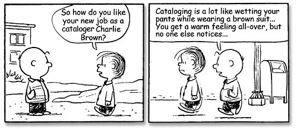

Chapter 1: Welcome¶

Credit: unknown
Welcome¶
Welcome to the course “Information Science” for the University of Antwerp Master of Linguistics (from 2021-2022 onwards: “Master of Digital Text Analysis”)!
Who am I and why does that matter?¶
Who am I?¶
My name is Tom Deneire, I hold a PhD in Classics from the Katholieke Universiteit Leuven (2009).
From 2009-2013 I worked as a postdoctoral researcher (Neo-Latin Studies) and a visiting professor (Latin rhetoric and stylistics), focussing mainly on the interplay of Neo-Latin and the vernacular, literary theory and dabbling in (then emerging) Digital Humanities (see e.g. Deneire 2018).
In 2013 I moved to the University Library of Antwerp as Curator of the Special Collections, where I became increasingly interested in library metadata and data science. I started studying XML, SQL and Python, and using these digital tools to research and aggregate library metadata.
In 2018 this lead to a switch from the Special Collections to the University Library’s software department Anet, where I have been working since then as a software engineer for Brocade Library Services. My main languages are Python and especially MUMPS, the language for our database engine (GT.M, provided by YottaDB). My current project is a complete rewrite and integration of the library’s double module for authority files. Occasionally, I also use SQL, Golang, PHP, Javascript and HTML/CSS. I use Linux as OS (esp. the Linux Mint distro).
(More information about me and links at https://tomdeneire.github.io/).
Why does that matter?¶
The above should make clear that I am not an expert in Information Science, nor a Computer Science major, nor have I been a professional developer for a long time. Indeed, at first I was not sure if I should really be teaching this course! So be warned that I will certainly not have all the answers in this course. On the other hand, my own profile is very kindred to that of my intended audience: humanities majors looking to acquire digital skills. I hope this common perspective will enable me to teach what such students need most from a vast field such as Information Science.
Course contents and learning outcomes¶
My specific profile also implies that this will not be a standard introduction to Information Science. If this is really what you are after, I think there is enough scholarly literature out there to get by. Instead what is offered here is a very hands-on introduction into library science and the technologies used in the field. Indeed, I am not exaggerating if I claim that in my professional activities developing library software, I will use each and every one of the topics dealt with in this course on an almost daily basis.
The aim of this course is to provide you with enough theoretical knowledge and especially practical experience to use these technologies in the field.
Technical setup¶
I have prepared this course as a series of Jupyter Notebooks and published on the GitHub repo for this course.
I have chosen Jupyter Notebooks because they offer a way to teach both in a classroom and online (should COVID-19 regulations prohibit live teaching). You can choose how you interact with these notebooks.
To view the content with code execution, you can:
use an editor with a Jupyter Notebook extension, such as VS Code
install Jupyter (Lab or Notebook) locally and open the notebooks in your browser
If you don’t want to install Jupyter on your machine, you can open the notebooks with Google Colab, but executing the code isn’t always guaranteed to work (because of missing third-party libraries and stack overflows in heavy data operations).
To view the content without code execution, you can:
read the notebooks in this GitHub repository
read the notebooks as a Jupyter Book hosted on GitHub Pages
In order to obtain these course materials and to participate with the course, please do the following:
fork this repo to your own GitHub account
clone it to your local machine
make and push changes
The third step especially applies to the coding assignments (see below). By commiting and pushing your changes I will be able to see them by going through the different forks to my repo. And of course if you find errors in the other course materials or want to propose changes, you can also make pull requests.
If you’re unsure how to do all of this, this GitHub guide will help. (Other interesting sources on Git are this Medium article and Atlassian’s tutorial). This Medium article contains even more references to cheatsheets, tutorials, etc.
To be sure everyone is setup okay, please do the following:
create a new folder “assignments”
put some test code in there (e.g. “test.py”), commit and push these changes to your fork
Course and assignments¶
During the academic year 2020-2021, the course will take place on Fridays, from 9h30 to 12h30, in room C.203, during weeks 9-13.
Each course will feature about 1,5 to 2 hours of theory and about 1 hour of practice. Most courses will feature a coding assignment, which will be introduced and discussed during the practical part of the course. Students are expected to finish the assignments after hours.
Model solutions for the assignments will be made available in the repository with a few weeks delay.
!Covid-19 update (5 November 2020)¶
The University of Antwerp has decided to switch to online teaching only, at least until 30 November.
For this course this will be organized as follows:
About one week before the course takes place, students will receive a Google Drive link where they can view a recording of the week’s course (+/- 1 hour).
Students watch the recording in their own time (+/- 1 hour) and also start implementing the coding assignment (+/- 0,5 hours).
On Fridays, from 9h30 to 11h (+/- 1,5 hours) we will meet in a Jitsi meeting room (link will be emailed) to discuss the course recording and the coding assignment. This session will also be recorded and uploaded to Google Drive.
I hope that this online method can provide the hands-on mix of theory and practice I had hoped to achieve in person, without putting any additional strain on the students.
If there are any changes to this MO, I will let the students know ASAP.
Exam: Project assignment¶
The aforementioned assignments lead up to a project assignment which will serve as the exam for this course. The project assignment will be introduced during the final course. The course coding assignments are not part of the course evaluation, but students who have succesfully completed the previous course assignments will be excellently prepared for submitting an adequate project assignment. Students will be required to finish the project in a certain timeframe.
Things you might find interesting¶
The following links are reading material ad libitum. While I certainly do not expect you to read them, you might find them interesting. In any case, I did! Please feel free to send me suggestions too!
As a general note: you’ll notice that I often refer to Medium, an online publishing platform for blogs dealing with just about anything. Medium lets you configure your interests so you get a personalized list of reading suggestions. Medium allows you to read upto 3 premium articles for free every month, but I find a paying membership more than worthwile.
Book recommendations for Python on Medium
A fantastic Python cheat sheet
A GitHub repo of free programming books
Computational Humanities Research, a platform for discussion on digital humanities, where you can also ask help with technical questions (code, tools, …)
Chapter 2: Definition¶

Credit: Davide Bonazzi
Definition¶
Information Science, Retrieval or Theory?¶
While this course is officially called Information Science, it was originally presented to me as Information Retrieval, which is rather different. And then you might also have heard about Information Theory. So let’s have a look at these disciplines and how they relate to each other.
Information Theory¶
Wikipedia says:
Information theory studies the quantification, storage, and communication of information. It was originally proposed by Claude Shannon in 1948 to find fundamental limits on signal processing and communication operations such as data compression, in a landmark paper titled “A Mathematical Theory of Communication”. Its impact has been crucial to the success of the Voyager missions to deep space, the invention of the compact disc, the feasibility of mobile phones, the development of the Internet, the study of linguistics and of human perception, the understanding of black holes, and numerous other fields.
The field is at the intersection of mathematics, statistics, computer science, physics, neurobiology, information engineering, and electrical engineering. The theory has also found applications in other areas, including statistical inference, natural language processing, cryptography, neurobiology, human vision, the evolution and function of molecular codes (bioinformatics), model selection in statistics, thermal physics, quantum computing, linguistics, plagiarism detection, pattern recognition, and anomaly detection. Important sub-fields of information theory include source coding, algorithmic complexity theory, algorithmic information theory, information-theoretic security, Grey system theory and measures of information.
Applications of fundamental topics of information theory include lossless data compression (e.g. ZIP files), lossy data compression (e.g. MP3s and JPEGs), and channel coding (e.g. for DSL). Information theory is used in information retrieval, intelligence gathering, gambling, and even in musical composition.
A key measure in information theory is entropy. Entropy quantifies the amount of uncertainty involved in the value of a random variable or the outcome of a random process. For example, identifying the outcome of a fair coin flip (with two equally likely outcomes) provides less information (lower entropy) than specifying the outcome from a roll of a die (with six equally likely outcomes). Some other important measures in information theory are mutual information, channel capacity, error exponents, and relative entropy.
(By the way, the entropy example is already a very nice illustration of the difference between information and knowledge)
Information Retrieval¶
Information Retrieval relies on information theory for its methods, but it is a much more applied discipline. Wikipedia says:
Information retrieval (IR) is the activity of obtaining information system resources that are relevant to an information need from a collection of those resources. Searches can be based on full-text or other content-based indexing. Information retrieval is the science of searching for information in a document, searching for documents themselves, and also searching for the metadata that describes data, and for databases of texts, images or sounds.
Automated information retrieval systems are used to reduce what has been called information overload. An IR system is a software system that provides access to books, journals and other documents; stores and manages those documents. Web search engines are the most visible IR applications.
An information retrieval process begins when a user enters a query into the system. Queries are formal statements of information needs, for example search strings in web search engines. In information retrieval a query does not uniquely identify a single object in the collection. Instead, several objects may match the query, perhaps with different degrees of relevancy.
An object is an entity that is represented by information in a content collection or database. User queries are matched against the database information. However, as opposed to classical SQL queries of a database, in information retrieval the results returned may or may not match the query, so results are typically ranked. This ranking of results is a key difference of information retrieval searching compared to database searching.
Depending on the application the data objects may be, for example, text documents, images, audio, mind maps or videos. Often the documents themselves are not kept or stored directly in the IR system, but are instead represented in the system by document surrogates or metadata.
Most IR systems compute a numeric score on how well each object in the database matches the query, and rank the objects according to this value. The top ranking objects are then shown to the user. The process may then be iterated if the user wishes to refine the query.
Information Science¶
Finally, Information Science is introduced on Wikipedia as:
Information science (also known as information studies) is an academic field which is primarily concerned with analysis, collection, classification, manipulation, storage, retrieval, movement, dissemination, and protection of information. Practitioners within and outside the field study the application and the usage of knowledge in organizations along with the interaction between people, organizations, and any existing information systems with the aim of creating, replacing, improving, or understanding information systems. Historically, information science is associated with computer science, psychology, technology and intelligence agencies. However, information science also incorporates aspects of diverse fields such as archival science, cognitive science, commerce, law, linguistics, museology, management, mathematics, philosophy, public policy, and social sciences.
History¶
In a way, all of these approaches are a way of dealing with information overload, which has a very long history. In a sense we might trace it back to Antiquity with Seneca the Elder (1st c. AD) who commented that “the abundance of books is distraction” or with Ecclesiastes 12:12: “of making books there is no end”. Indeed, compendia, anthologies, abbreviations and such became very popular in the Middle Ages as a way to manage information. However, with the arrival of the printing press information overload became truly problematic. We see people like Erasmus complaining about the swarms of new books and looking for ways to further organize, compile, index, … information in thesauri, encyclopaedias, etcetera. Of course, the arrival of digital carriers and finally the Internet are the apex of this evolution.
If your interested in reading more about this, have a look at the Wikipedia article on the topic, or for Early Modern times specifically:
Ann Blair, Information overload, the early years
Ann Blair, Reading Strategies for Coping with Information Overload ca. 1550- 1700, in: Journal of the History of Ideas, 64 (2003), 11-28.
Ethics¶
Something else which is beyond the scope of this course, is information ethics. Still, we cannot go by without at least briefly touching the topic.
Living in the Information Age is of course a wonderful thing. Most vital aspects of our life, health, work, communication, travel, … all rely on information. It started with newspapers, radio and TV. Then came computers, the Internet and mobile phones. Today, all of these media are interconnected in our smartphones, tablets and laptops. They are fed by big data and increasingly able through the use of artificial intelligence and machine learning.
While the possibilities of the Information Age can be immensely empowering, it is also clear that great power comes with great responsiblity. The flipside of our dependency of information are phenomena like computer crime, digital dark age, cyberterrorism, digital divide, child pornography on the Dark Web, and many, many more.
Often information technologies are very ambivalent, and it is not easy to see when they cross the line. Two examples.
A. A South-Korean TV documentary gave a mother the opportunity to meet a digital version of her dead daughter after her body, voice and face were recreated using virtual reality technology. You can read more about it in these sources and also watch the footage on YouTube (which I recommend). Do you find the story beautiful or heartbreaking?
B. You probably know about GPT-3, Generative Pre-trained Transformer 3, which is a language model — a program that is, given an input text, trained to generate text, e.g. to predict the next word or words (thus writing a story) or to translate (just look at this example!). GPT-3 is one of the largest such models, having been trained on about 45 terabytes of text data, taken from thousands of web sites such as Wikipedia, plus online books and many other sources (definition from this Medium article). The quality of the text generated by GPT-3 is so high that it is difficult to distinguish from that written by a human, which has both benefits and risks. One of the risks is that if there is a certain bias (eurocentric, sexist, racist, …) present in the data the model is trained on, this trend will be reflected in the texts produced by the model. Some concrete examples can be found in:
The recent Netflix documentary The Social Dilemma undoubtedly touches this subject too, although I haven’t seen it myself yet.
Chapter 3: Getting started¶

“Hello world” program in Brainfuck
Getting started¶
A good scholarly way to get started is reading the introductions to some of the books mentioned in the course description - especially Handbook of Information Science, but also Modern Information Retrieval or Information Architecture.
But let’s open up things a bit more anecdotally, with the story of Paul Otlet and the Internet before the Internet…
Manipulating Information¶
The case of Otlet shows several things, but above all it makes it clear that information (or metadata in this case) never just is. It is always already manipulated in order to present it in a certain way (Derrida pun intended). So we could say that at the heart of information retrieval is manipulating information, i.e. selecting, grouping, filtering, ordering, sorting, ranking. (For those of you who know SQL, notice how this resembles the syntax of a select statement? For those of you who don’t, don’t worry, we’ll look into it later on.)
In programming terms, you would be surprised to see how much of this comes down to basic string operations, like testing metadata for certain criteria or sorting them. And while manipulating strings might seem easy, things can get complicated really easily.
Example: sorting strings¶
Let’s look at the example of sorting strings. Suppose our task is presenting an alphabetized list of contact persons. The alphabet is a recognizable and expected key for such a list, so that makes sense from an information retrieval perspective.
Of course, in Python you can just do this:
contacts = ["Doe, John", "Poppins, Mary", "Doe, Jane"]
sorted_contacts = sorted(contacts)
print(sorted_contacts)
['Doe, Jane', 'Doe, John', 'Poppins, Mary']
But suppose you are dealing with a language where there is no built-in sorting method. (And believe me, there are!) How would you go about sorting a list of strings?
Let me simplify the problem. Somewhere along the line you will have to represent individual characters as numbers, e.g. a = 1, b = 2, and then sort numbers.
So let’s think about the root issue: how do you sort a list of numbers?
numbers = [7, 8, 1, 7, 2]
sorted_numbers = sorted(numbers)
print(sorted_numbers)
[1, 2, 7, 7, 8]
Of course, the sorting algorithm is a well-known chapter in Computer Science. Some of you might be familiar with different kinds of sorts, like merge sort, insertion sort or (my favourite) bubble sort. For some Python implementations, see this Tutorialspoint article or for a general discussie, see this Medium article.
But if you have never studied it, writing your own sort for the first time will not be an easy exercise. I challenge you, it’s good fun to try. For a bit of fun, here’s another kind of sort I recently implemented in Python: random sort. Very time-inefficient, but perfectly functional!
def random_sort(InputList):
from random import shuffle
check = 0
while check == 0:
shuffle(InputList)
test = 0
for unsorted in InputList:
if unsorted >= test:
check = 1
else:
check = 0
break
test = unsorted
return InputList
print(random_sort([7, 8, 1, 7, 2]))
[1, 2, 7, 7, 8]
And that’s only the first part of the problem: sorting a list of numbers. Now try to think how this would help to sort lists of strings. First of all, how would you translate characters to numbers?
One way is to use Unicode code points for numbers:
for char in "Doe, John":
print(ord(char), end=",")
68,111,101,44,32,74,111,104,110,
But of course when the case changes, the numbers will also change:
for char in "doe, john":
print(ord(char),end=",")
100,111,101,44,32,106,111,104,110,
You can account for that by converting all strings to lower case first, but what happens in the case of Étienne versus Etienne, which you would want to be sorted close to each other and are, in fact, used interchangeably?
for char in "Étienne".lower():
print(char + " = " + str(ord(char)))
print("\n")
for char in "Etienne".lower():
print(char + " = " + str(ord(char)))
é = 233
t = 116
i = 105
e = 101
n = 110
n = 110
e = 101
e = 101
t = 116
i = 105
e = 101
n = 110
n = 110
e = 101
We can complicate matters even more:
print('\u00C5')
print('\u212B')
print('\u0041\u030A')
Å
Å
Å
So even Unicode code points don’t offer a unique mapping of characters to numbers. (To solve this, there is luckily something called Unicode normalization)
And, by the way, do you know the encoding of the strings the list will contain? And why does that matter? It matters, because the editor you use to read the strings (e.g. VS code) and the programming language you use often work with default encodings. For instance, Python3 (not Python2) is default UTF8. So if you receive strings in a different encoding, you’ll have to decode them to render your results properly.
(If you’re not comfortable with the difference between text and bytes, and the notion of encoding/decoding, this article is a good starting point: A Guide to Unicode, UTF-8 and Strings in Python by Sanket Gupta).
Let’s simulate what would happen if you were working with non-UTF8 encoded strings in Python3:
e_accent_aigue = chr(233) # unicode code point for é character
for encoding in ['utf8', 'latin1', 'ibm850']:
bytes_string = e_accent_aigue.encode(encoding)
print(bytes_string)
try:
print(bytes_string.decode('utf8'))
except UnicodeDecodeError:
print(f"Unable to print bytes {bytes_string} in UTF8")
b'\xc3\xa9'
é
b'\xe9'
Unable to print bytes b'\xe9' in UTF8
b'\x82'
Unable to print bytes b'\x82' in UTF8
You can see how complex seemingly trivial tasks of information theory, like alphabetizing a list,really are. We’ve gone from Paul Otlet’s grand visions of the future to the bare bits and bytes, one of the most fundamental concepts in computer science, really quickly.
Assignment: Onegram Counter¶
You probably know about Google Book’s Ngram Viewer: when you enter phrases into it, it displays a graph showing how those phrases have occurred in a corpus of books (e.g., “British English”, “English Fiction”, “French”) over the selected years.
Your assignment for this course is something similar: build a Python function that can take the file data/corpus.txt (UTF-8 encoded) from this repo as an argument and print a count of the 100 most frequent 1-grams (i.e. single words).
In essence the job is to do this:
from collections import Counter
import os
def onegrams(file):
with open(file, 'r') as corpus:
text = corpus.read()
# .casefold() is better than .lower() here
# https://www.programiz.com/python-programming/methods/string/casefold
normalize = text.casefold()
words = normalize.split(' ')
count = Counter(words)
return count
ngram_viewer = onegrams(os.path.join('data', 'corpus.txt'))
print(ngram_viewer.most_common(100))
[('the', 11852), ('', 5952), ('of', 5768), ('and', 5264), ('to', 4027), ('a', 3980), ('in', 3548), ('that', 2336), ('his', 2061), ('it', 1517), ('as', 1490), ('i', 1488), ('with', 1460), ('he', 1448), ('is', 1400), ('was', 1393), ('for', 1337), ('but', 1319), ('all', 1148), ('at', 1116), ('this', 1063), ('by', 1042), ('from', 944), ('not', 933), ('be', 863), ('on', 850), ('so', 763), ('you', 718), ('one', 694), ('have', 658), ('had', 647), ('or', 638), ('were', 551), ('they', 547), ('are', 504), ('some', 498), ('my', 484), ('him', 480), ('which', 478), ('their', 478), ('upon', 475), ('an', 473), ('like', 470), ('when', 458), ('whale', 456), ('into', 452), ('now', 437), ('there', 415), ('no', 414), ('what', 413), ('if', 404), ('out', 397), ('up', 380), ('we', 379), ('old', 365), ('would', 350), ('more', 348), ('been', 338), ('over', 324), ('only', 322), ('then', 312), ('its', 307), ('such', 307), ('me', 307), ('other', 301), ('will', 300), ('these', 299), ('down', 270), ('any', 269), ('than', 262), ('has', 257), ('very', 252), ('though', 245), ('yet', 245), ('those', 242), ('must', 238), ('them', 237), ('her', 237), ('do', 234), ('about', 234), ('said', 233), ('ye', 232), ('who', 231), ('still', 229), ('great', 229), ('most', 228), ('man', 220), ('two', 219), ('seemed', 216), ('long', 214), ('your', 213), ('before', 212), ('it,', 210), ('thou', 210), ('ship', 209), ('after', 208), ('white', 207), ('did', 202), ('little', 201), ('him,', 194)]
However, there is a twist: you can’t use the collections library…
Moreover, try to think about what else may be suboptimal in this example. For instance, in this code all of the text is loaded into memory in one time (with the read() method). What would happen if we tried this on a really big text file?
Most importantly, the count is also wrong. Check by counting in an editor, for instance, and try to find out why.
If this is an easy task for you, you can also think about the graphical representation of the 1-gram count.
Chapter 4: Databases¶
Credit: unknown
Information vs Database Models¶
Formal discussions of information might start with the discussion of information models. Wikipedia’s definition reads:
An information model in software engineering is a representation of concepts and the relationships, constraints, rules, and operations to specify data semantics for a chosen domain of discourse. Typically it specifies relations between kinds of things, but may also include relations with individual things. It can provide sharable, stable, and organized structure of information requirements or knowledge for the domain context.
An information model provides formalism to the description of a problem domain without constraining how that description is mapped to an actual implementation in software. There may be many mappings of the information model. Such mappings are called data models (…)
Information retrieval then goes a step further and also discusses information retrieval models, as does chapter 3 of Modern Information Retrieval :
Modeling in IR is a complex process aimed at producing a ranking function, i.e., a function that assigns scores to documents with regard to a given query. This process consists of two main tasks: (a) the conception of a logical framework for representing documents and queries and (b) the definition of a ranking function that computes a rank for each document with regard to a given query.
To build a model, we think first of representations of the documents and of the user information needs. In the case of a document, the representation might be a subset of all terms in the document, which can be generated by removing stopwords (such as articles and prepositions) from the text, for instance. In the case of a query the representation might be a superset of the query terms formed by the original query enriched with synonyms, for instance. Given these representations, we then concieve the framework in which they can be modeled.
However, while such models are obviously very interesting for information science, the discussion is also highly theoretical and requires no small amount of mathematics (set theory, algebra, probability theory, …). Instead, from our practical perspective it makes more sense to open up the discussion of information, by dealing with database models. Indeed, in most real-world applications of information science, you will most likely have to deal with specific databases that stores information and not with the abstract information models that map the data to these databases.
Databases¶
Wikipedia defines a database as a “an organized collection of data, generally stored and accessed electronically from a computer system”. Such a broad definition allows for many different kinds of databases, ranging from a single text file (e.g. the line apples,oranges,grapes is a database!) to complex database management systems (DBMS) like MySQL that operate on large data structures.
Database models¶
The classification of databases is a topic for a course on its own. For now, it will suffice to say that the development of database technology can be divided into three eras based on data model or structure: navigational, relational/SQL, and post-relational.
Relational/SQL¶
Wikipedia:Relational_model and Wikipedia:Database say:
The relational model (…) is an approach to managing data using a structure and language consistent with first-order predicate logic, first described in 1969 by English computer scientist Edgar F. Codd, where all data is represented in terms of tuples, grouped into relations. (…) he described a new system for storing and working with large databases. Instead of records being stored in some sort of linked list of free-form records (…), Codd’s idea was to organise the data as a number of “tables”, each table being used for a different type of entity. Each table would contain a fixed number of columns containing the attributes of the entity. One or more columns of each table were designated as a primary key by which the rows of the table could be uniquely identified; cross-references between tables always used these primary keys, rather than disk addresses, and queries would join tables based on these key relationships, using a set of operations based on the mathematical system of relational calculus (from which the model takes its name). Splitting the data into a set of normalized tables (or relations) aimed to ensure that each “fact” was only stored once, thus simplifying update operations. Virtual tables called views could present the data in different ways for different users, but views could not be directly updated.
The purpose of the relational model is to provide a declarative method for specifying data and queries: users directly state what information the database contains and what information they want from it, and let the database management system software take care of describing data structures for storing the data and retrieval procedures for answering queries.
Most relational databases use the SQL data definition and query language
Post-relational¶
Wikipedia says:
A NoSQL (originally referring to “non-SQL” or “non-relational”) database provides a mechanism for storage and retrieval of data that is modeled in means other than the tabular relations used in relational databases. Such databases have existed since the late 1960s, but the name “NoSQL” was only coined in the early 21st century (…) NoSQL databases are increasingly used in big data and real-time web applications. NoSQL systems are also sometimes called “Not only SQL” to emphasize that they may support SQL-like query languages or sit alongside SQL databases in polyglot-persistent architectures.
(…) The data structures used by NoSQL databases (e.g. key–value pair, wide column, graph, or document) are different from those used by default in relational databases, making some operations faster in NoSQL. The particular suitability of a given NoSQL database depends on the problem it must solve. Sometimes the data structures used by NoSQL databases are also viewed as “more flexible” than relational database tables.
Categories of post-relational databases include:
key-value stores, such as the MUMPS database by YottaDB that we use for Brocade, the University of Antwerp’s Library Management System
document stores, such as XML or JSON
triple stores, such as RDF
The important thing to realize here is that post-relational databases can express things that relational databases can’t. For instance, how would you translate this JSON (postrelational) to a spreadsheet (relational)?
{
"1": {
"name": "Tom Deneire",
"age": "39"
},
"2": {
"name": "Gandalf",
"bio": {
"age": "unknown",
"occupation": "wizard"
}
}
}
Databases as Linked Data¶
Another interesting way to think about databases is to consider them from the view point of Linked (open) Data.
At w3.org we read:
Tim Berners-Lee, the inventor of the Web and initiator of the Linked Data project, suggested a 5 star deployment scheme for Linked Data. The 5 Star Linked Data system is cumulative. Each additional star presumes the data meets the criteria of the previous step(s).
☆ Data is available on the Web, in whatever format.
☆☆ Available as machine-readable structured data, (e.g., not a scanned image).
☆☆☆ Available in a non-proprietary format, (e.g, CSV, not Microsoft Excel).
☆☆☆☆ Published using open standards from the W3C (RDF and SPARQL).
☆☆☆☆☆ All of the above and links to other Linked Open Data.
In this way, we can organize different database types into a data hierarchy like such:

OL: Open License
RE: Readable
OF: Open format
URI: Uniform Resource Identifier
LD: Linked Data
For a good description of this summary, see this article.
RDF¶
Unfortunately, we do not have time to discuss RDF and Linked Data in detail. However, it is important to realize that RDF is a data model, not a data serialization model, such as XML or JSON - in fact, both can be used to express RDF data.
A quick summary from Wikipedia:
The RDF data model is similar to classical conceptual modeling approaches (such as entity–relationship or class diagrams). It is based on the idea of making statements about resources (in particular web resources) in expressions of the form subject–predicate–object, known as triples. The subject denotes the resource, and the predicate denotes traits or aspects of the resource, and expresses a relationship between the subject and the object.
For example, one way to represent the notion “The sky has the color blue” in RDF is as the triple: a subject denoting “the sky”, a predicate denoting “has the color”, and an object denoting “blue”. Therefore, RDF uses subject instead of object (or entity) in contrast to the typical approach of an entity–attribute–value model in object-oriented design: entity (sky), attribute (color), and value (blue).
RDF is an abstract model with several serialization formats (i.e. file formats), so the particular encoding for resources or triples varies from format to format.
The core concept of the triplestore and the underlying Linked Data principle is the Uniform Resource Identifier (URI), a unique and unambiguous ID for all things linked. Optimally linked data uses URIs for all three elements of the triple, subject, predicate and verb. To illustrate how this works, let’s look at the (abbreviated) RDF/XML for the Wikidata entry Paris, known as entity Q90:
<?xml version="1.0"?>
<rdf:Description rdf:about="http://www.wikidata.org/entity/Q90">
<wdt:P1376 rdf:resource="http://www.wikidata.org/entity/Q142"/>
</rdf:Description>
This is a triple expressing the fact that “Paris” (subject) “is the capital of” (predicate) “France” (object). To express this three URIs are used: Q90 (Paris), P1376 (property “is capital of”) and Q142 (France). The makes the statement unique, uniform, unambiguous (telling a computer that Paris the city, not Paris Hilton (Q47899) is the capital of France), and linked: all elements of the triple are linked up to other data, e.g. Q142 which was the object in this statement, will be the subject of others.
Consider the difference with non-RDF XML where resources are not identified with URIs and data is not linked and the model not open:
<?xml version="1.0"?>
<Description>Paris
<isCapitalof>France</isCapitalof>
</Description>
RDF and especially Linked Open Data are undoubtedly part of the future for information science. If you’re interested to know more or need to work with RDF and Linked Data in practice, I highly recommend reading A Librarian’s Guide to Graphs, Data and the Semantic Web, By James Powell, ISBN 978-1843347538.
Query Languages¶
Database operations can be summarized with the acronym CRUD: create, read, update and delete. From an information standpoint, the main focus is arguably reading from the database. Most often though, we do not read directly as this is not possible (not all databases can be browsed), or practical (we get to much information). Instead, reading databases is usually done through queries, for which we use query languages.
Actually, query languages surpass databases. Formally, query languages can be classified according to whether they are database query languages or information retrieval query languages. The difference is that a database query language attempts to give factual answers to factual questions, while an information retrieval query language attempts to find documents containing information that is relevant to an area of inquiry.
For the latter we will discuss CQL, for the former XML and SQL.
CQL¶
Let’s start with an example of an information retrieval query language: contextual query language. According to Wikipedia
Contextual Query Language (CQL), previously known as Common Query Language, is a formal language for representing queries to information retrieval systems such as search engines, bibliographic catalogs and museum collection information. Based on the semantics of Z39.50, its design objective is that queries be human readable and writable, and that the language be intuitive while maintaining the expressiveness of more complex query languages. It is being developed and maintained by the Z39.50 Maintenance Agency, part of the Library of Congress.
Querying with CQL operates via SRU - Search/Retrieve via URL, which is a standard XML-based protocol for search queries.
You can find the SRU and CQL specifications at the Library of Congress website.
A fun example of an API that support SRU/CQL is offered by the CERL (Consortium of European Research Libraries), which is responsible for the CERL Thesaurus, containing forms of imprint places, imprint names, personal names and corporate names as found in material printed before the middle of the nineteenth century - including variant spellings, forms in Latin and other languages, and fictitious names.
To use this API you just send a web request to
https://data.cerl.org/thesaurus/_sru?version=1.2&operation=searchRetrieve&query=
followed by your CQL query in double quotes (or rather: %22 which is the URL-safe encoding entity for "), for instance:
https://data.cerl.org/thesaurus/_sru?version=1.2&operation=searchRetrieve&query=%22Erasmus%22
The response will be an XML document (database) containing the relevant CERL thesaurus entries for this query.
XML¶
XML is something most of you are already familiar with, as it is a recurring technology in digital text analysis. In fact, XML is ubiquitous in the information world. It is very actively used in the library world. Another example is invoicing; for instance, the Government of Flanders has been asking for XML e-invoices from its suppliers for all contracts since 2017.
If you need to brush up your understanding of XML, w3schools is a good place to start. Here we will briefly return to the matter of parsing XML, which is the process of analyzing XML documents to extract their information.
For Python, two XML libraries are highly recommended:
Both turn XML’s hierarchical structure into a parse tree, which behaves like a Pythonic object that you can then iterate over. Chapter 5 will feature a coding assignment that involves parsing and building XML, so it’s recommended to refamiliarize yourself with either or both of these libraries.
SQL/SQLite¶
Unlike XML, SQL is a technology that is probably new to most of you. Unlike RDF, which libraries seem hesitant to adopt, SQL is ubiquitous, including outside of libraries. Moreover, SQL has for instance heavily influenced the aforementioned CQL, and also SPARQL , the query language for RDF. So knowing SQL will open many doors.
SQL is the query language for RDBMS, which are most often implemented in a client-server database engine. So for you to use SQL you would need a connection to a SQL database server, i.e. something like MySQL or Oracle. However, there is also a very good standalone alternative, called SQLite. Simply said SQLite is just a single file, but you can query it just like a SQL database server. There are some minute differences between SQL syntax and the SQLite dialect, but these are really small.
So let’s dive in with this Google Slides presentation.
sqlite3¶
Python’s standard library contains the module sqlite3 which allows a SQL interface to a database.
For example, let’s launch some SQL queries on a sqlite database of STCV, which is the Short Title Catalogue Flanders, an online database with extensive bibliographical descriptions of editions printed in Flanders before 1801. This database is available as part of the Anet Open Data. A recent version of it is available in this repo under data.
import os
import sqlite3
# To use the module, you must first create a Connection object that represents the database
conn = sqlite3.connect(os.path.join('data', 'stcv.sqlite'))
# Once you have a Connection, you create a Cursor object
c = conn.cursor()
# To perform SQL commands you call the Cursor object's excute() method
query = """
select distinct author_zvwr, title_ti, impressum_ju1sv from author
join title on author.cloi = title.cloi
join impressum on title.cloi = impressum.cloi
group by author_zvwr
"""
c.execute(query)
# Call fetchall() to get a list of the matching rows
# Using list comprehension, explanation at https://medium.com/techtofreedom/8-levels-of-using-list-comprehension-in-python-efc3c339a1f0
data = [row for row in c.fetchall()]
for row in data[50:60]:
print(row)
# Close the connection when you're done
conn.close()
('A.E.J.D.', 'Exhibitio sacrorum canonum circa ius regvlarium ecclesiarvm, quoad prædicationem divini Verbi', '1674')
('A.F.', "Histoire de l'empereur Charles V.", '1663')
('A.F. Wouthers', 'Civilia busta Philippi ofte De borgerlycke uytvaert over Philippus den Vierden coninck van Spanien [...] gedaen door de overheyt ende het volck van Antwerpen [...] den 17. dagh der wintermaendt 1665', '1666')
('A.F., Theophilus', "Het noodeloos tegen-venyn van een stuck sermoons door christelycke liefde van bitterheyt gesuyvert en wederleyt door't gesagh van d'algemeyne kerck-vergaderingen en van d'heylige vaders dienende tot vastigheyt van ons out geloof", '1718')
('A.G.', 'Maria het huys des heeren ghebouwt op seven colomnen, te weten op de dry goddelijcke deughden, ende de vier hooft-deughden', '1683')
('A.H.', "Entretiens de devotion sur le S. sacrement de l'autel", '1722')
('A.H.G.H.V.C. Romanum', 'Historia avgvsta, sive Imperatorvm cæsarvmq. Romanorvm vitae et res gestae ex antiquis inscriptionibus collecta', '1602')
('A.H.v.G.', 'Getuige der waerheid in de leere van Gods eeuwige verkiezinge, van de genade des zaligmakers, en van den vryewil der menschen', '1689')
('A.I.v.K.P.', 'Opgang, voortgang, en nedergang, der ketteryen deser eeuwe', '1690')
('A.J. Charles', 'Het leven van de H. moeder Begga fondateuresse van de beggynen', '1760')
Assignment: JSON metadata harvester¶
JSON¶
One (document) database technology which we have not discussed yet, is JSON. If you need to brush up on your JSON skills, w3schools is again a good starting point.
However, JSON is much easier to work with than XML. Whereas XML needs to be parsed or queried through XPath, which is not an easy technology to master, basically, you can just think about JSON as a “string” version (it is a document database) of a Python dictionary:
json_string = '''
{
"name": "Deneire",
"age": 39,
"initials": ["T", "B"]
}
'''
print(json_string)
print(type(json_string))
python_dict = {}
python_dict["name"] = "Deneire"
python_dict["age"] = 39
python_dict["initials"] = ["T", "B"]
print(python_dict)
print(type(python_dict))
{
"name": "Deneire",
"age": 39,
"initials": ["T", "B"]
}
<class 'str'>
{'name': 'Deneire', 'age': 39, 'initials': ['T', 'B']}
<class 'dict'>
In fact, Python allows you to access JSON just like a database, using the json library to either turn JSON into a dict (loads() ) or to turn a dict into JSON (dumps()):
from json import loads, dumps
contacts = """
{
"1": {
"lastname": "Doe",
"firstname": "John"
},
"2": {
"lastname": "Doe",
"firstname": "Jane"
}
}
"""
# Turn JSON into dict with loads()
contacts_dict = loads(contacts)
print(contacts_dict["2"]["lastname"])
# Turn dict into JSON with dumps()
contacts_dict["2"]["lastname"] = "Eyre"
contacts = dumps(contacts_dict)
print(contacts)
Doe
{"1": {"lastname": "Doe", "firstname": "John"}, "2": {"lastname": "Eyre", "firstname": "Jane"}}
What is an API?¶
For your assignment you will be using the JSON data made available through the Europeana Entities API, which allows you to search on or retrieve information from named entities. These named entities (such as persons, topics and places) are part of the Europeana Entity Collection, a collection of entities in the context of Europeana harvested from and linked to controlled vocabularies, such as Geonames, DBpedia and Wikidata. It is advisable to read the API’s documentation first.
A quick word in general about an API, or Application Programming Interface.
Non-technical users mostly interact with data through a GUI or Graphical User Interface, either locally (e.g. you use DBbrowser to look at a SQLite database) or on the web (e.g. you use Wikidata’s web page). However, when we try to interact with this data from a machine-standpoint, i.e. in programming, this GUI is not suitable. We need an interface that is geared towards computers. So we use a local (e.g. Python’s sqlite3 module) or remote (e.g. Wikidata’s Query Service) API to get this data in a way that can be easily handled by computers.
In this way, an API is an intermediary structure, which has a lot of benefits. Wouldn’t it be nicer to have direct access to a certain database? In a way, yes, but this would also cause problems. There are many, many different database architectures, but API architectures are generally quite predictable. They are often based on well-known technologies like JSON or XML, so you don’t have to learn a new query language. Moreover, suppose Wikidata changes their database? All of your code that uses the database would need to be rewritten. By using the API intermediary structure Wikidata can change the underlying database, but make sure their API still functions in the same way as before.
There are lots of free web APIs out there. The NASA API, for instance, is quite incredible. Or this Evil Insult Generator, if you want to have some fun! You can find an extensive list of free APIs __here.
Assignment¶
Your assignment is simple. Write a Python script that prompts for user input of a named entity, query the API for that entity, parse the results and print them on standard output.
Some tips:¶
You can use the key
wskey=apidemofor your API request.A good Python library to access URLs is
urllib, an alternative (which is not in the standard library) isrequests.Think about what we have seen already about standardizing/normalizing search strings, but take this to the next level.
Try to anticipate what can go wrong so the program doesn’t crash in unexpected situations.
Test your application with the following search strings:
Erasmus,Justus LipsiusandDjango Spirelli.
If this is an easy task for you, you might think about parsing the results and adding them to your own database structure, e.g. XML or SQLite.
Chapter 5: Metadata¶

Credit: unknown
Metadata¶
In the previous chapter we saw how, from a practical point of view it makes more sense to talk about data models instead of information models. In this chapter, we are going to do the same with information itself. Indeed, a lot of what happens in information science does not have to do with information per se, but with information about information, also known as metadata:
Wikipedia says:
Metadata is “data that provides information about other data”. In other words, it is “data about data.” Many distinct types of metadata exist, including descriptive metadata, structural metadata, administrative metadata, reference metadata and statistical metadata.
In this discussion, we will focus especially on descriptive metadata, i.e. descriptive information about a resource.
Descriptive metadata is used for discovery and identification. If we think about books, for example, descriptive metadata would include elements such as title, author, date of publication, etcetera. Or, Exif (Exchangeable image file format) is a metadata standard that specifies the formats for images, sound, and ancillary tags used by digital cameras (including smartphones), scanners and other systems handling image and sound files recorded by digital cameras.
Metadata is important!¶
Metadata might seem trivial – in fact, I don’t like the word ancillary (inspired by Wikipedia) in the previous paragraph – or non-essential. However, metadata performs a huge and crucial role in information science and software development as a whole. As a rule, applications will strictly separate the business logic of the application (e.g. invoice system) and the metadata the application uses (e.g. database of clients, suppliers, etc.), in order to keep their software as generic as possible, but without the latter, the former is just an empty shell.
Consider, as an illustration, this story about a bug in the Samsung Blu Ray player!
It’s complicated¶
The definition of metadata as “data about data” somewhat misses the mark. In order to illustrate that, we need to take a look at a concrete example of metadata.
Have a look at this title page:

Credit: photo: STCV catalogue, copy: UA-CST MAG-P 13.74 (f. *1 recto)
STCV¶
The STCV catalogue, which we have already mentioned a few times, catalogues this book’s title* as follows:
Category |
Metadata |
|---|---|
Title |
Title page: Poliorceticωn sive De machinis. Tormentis. Telis. Libri qvinqve |
Author |
Title page: Ivstus Lipsius [Lipsius, Justus] |
. |
External: van Veen, Otto [Illustrator] |
. |
External: van der Borcht, Pieter I [Illustrator] |
Publication |
Title page: ex officina Plantiniana, apud viduam, & Ioannem Moretum [Rivière, Jeanne & Jan I Moretus] |
. |
Title page: Antverpiæ [Antwerp] |
. |
1596 |
Language |
Latin [Target language] |
(* There are also other sections of information, such as analytical bibliography, keywords, etc.)
Now let’s compare this to the title page.
For instance, we see that the difference between lower case, upper case and small caps has disappeared. This might seem trivial, but did you realise that in Renaissance Latin a capitalized final “I” stands for “ii”? So the full title is actually, “Ivsti Lipsii…” Or, suppose that someone is studying the use of capitalization in title layout as a marketing means. This is vital information that is missing.
Moreover, when we focus on the title, we see small changes. Whereas the title page does not have a space between “Tormentis.Telis”, the transcription does. And it also leaves out the italic parts Ad Historiarum lucem (In light of History) and Cum Privilegiis Caesareo & Regio (With Imperial and Royal Privilege). Again, such information could be very interesting to book historians, including the fact that italic type is used on the front page (again a matter of layout which could be construed as visual marketing).
Also, when we look at the date, we notice this has been interpreted rather than transcribed. The Roman numeral (with the typical dots) has been silently turned into ‘1596’. This does injustice to the fact that humanists like Lipsius used Roman numerals on their title pages as a conscious imitation of ancient Roman epigraphy. The same goes for the line breaks.
Furthermore, we see that copy specific information, such as the stamp in the upper right corner and the pasted on inscription on the bottom have also been left out.
On the other hand, there is also more information in the descriptive metadata than is on the title page. The names of the illustrators, for instance, and the name of Christopher Plantin’s widow are added.
Worldcat¶
Let’s compare this with the entry for the same title in Worldcat, the world’s largest network of library content and services:
Category |
Metadata |
|---|---|
Title |
Ivsti LipsI Poliorcetic[o]n, sive, De machinis, tormentis, telis, libri qvinqve : ad historiarum lucem. |
Author |
Justus Lipsius; Petrus van der Borcht |
Publisher |
Antverpiæ : Ex Officina Plantiniana, apud Viduam, & Ioannem Moretum, M.D. XCVI [1596] |
The information is pretty similar, but now that we are tuned into some of the subtleties we notice the differences.
“Ad historiarum lucem” is present here, for instance. On the other hand, Worldcat has different capitalization and provides only one illustrator, without specifying that this is external information (i.e. not included in the title page). Worldcat also has opts for a transliteration in Latin alphabet for Lipsius’s “macaronic” form Poliorceticωn, again a conscious effort of antiquarian Spielerei.
Discussion¶
This example shows that different catalogues adhere to different cataloguing rules. Indeed, it is impossible to simply catalogue at book title (or indeed any item, be it physical or digital) “as is”. However diplomatic and inclusive you try to be when cataloguing, you will always have to make hard decisions about how to handle layout, how to transcribe characters, whether or not to standardize spelling, punctuation, etcetera.
All of this is perfectly understandable and in general (good) catalogues will be explicit and very scrupulous in the cataloguing rules they follow. The danger is that when we leave the cataloguing context and, for instance, acquire catalogue information in a data dump (STCV is freely available here) we tend to forget this and take the metadata at face value.
Imagine for a minute that you hadn’t seen the above title page, but merely got the STCV metadata from a SQL query. How accurate would your understanding of this title page actually be? And what happens when, as good DH research is bound to do, you break open metadata containers and aggregate metadata, for instance merging several of the national “short-title catalogue” initiatives (STCV, STCN, ESTC, USTC, …), which all adhere to different rules?
To make matters worse, our example was a very simple one really. There are many, many more complex metadata problems. Just to give you a taste:
How would you catalogue one of those toddler squeeky books that feature not a single word of text?
When in 1993 Prince changed his stage name to the unpronounceable symbol
 (known to fans as the “Love Symbol”), and was sometimes referred to as the Artist Formerly Known as Prince or simply the Artist, how were record shops supposed to catalogue his albums? Remember, in those days, most people would go up to the “P” section and browse for “Prince”!
(known to fans as the “Love Symbol”), and was sometimes referred to as the Artist Formerly Known as Prince or simply the Artist, how were record shops supposed to catalogue his albums? Remember, in those days, most people would go up to the “P” section and browse for “Prince”!Or what about the IMDB website listing the actors of the Blair Witch Project as “missing, presumed dead” in the first year of the film’s availability (see this article)?
Metadata 101¶
We now have a better understanding of metadata. We know know that, as a former student of mine @Karolingva once tweeted from a RightsCon conference: metadata is not data about data, but
created data about data
by humans
with a purpose
according to certain standards
This means than when working with metadata we need to be acutely aware of this context.
In short, that means having an understanding of cataloguing standards, metadata standards and exports.
Cataloguing standards¶
As we saw in the case of STCV or WorldCat book titles were catalogued following certain rules. The same holds true for all sorts of physical or digital items. So if you are working with metadata you’ll do well to have at least a basic understanding of the cataloguing standards that were used to create the metadata.
As for book cataloguing standards, for instance, we can mention
RDA (Resource Description and Access)
(subscription needed)
E.g. names with articles = ‘The Hague’ NOT ‘Hague, the’
DCRM(B) (Descriptive Cataloging of Rare Materials - Books)
(open source)
E.g. no spaces for abbreviations = ‘Ad S.R.E. Cardinalem…’, EXCEPT multiple letter-abbreviations = ‘Ad Ph. D. Jacobum..’
Metadata standards¶
Once metadata has been produced according to certain cataloguing rules, we can also define a metadata standard, i.e.
a requirement which is intended to establish a common understanding of the meaning or semantics of the data, to ensure correct and proper use and interpretation of the data by its owners and users.
Some of the most common metadata standards in the world of GLAM (galleries, libraries, archives, and museums) are:
Books: MARC
Machine-Readable Cataloging (MARC21)
e.g. field 245 = title
Archives: EAD
Encoded Archival Description (XML standard)
Objects: Dublin Core
Dublin Core Metadata Initiative
If you’re interested to know more about metadata standards, good starting points this page by Lyrasis, a non-profit organization whose mission is to support enduring access to the world’s shared academic, scientific and cultural heritage through open technologies, and BARTOC, the Basic Register of Thesauri, Ontologies & Classifications.
Exports¶
Working with metadata one is quickly faced with the issue of data being locked away in a so-called information silo:
an insular management system in which one information system or subsystem is incapable of reciprocal operation with others that are, or should be, related. Thus information is not adequately shared but rather remains sequestered within each system or subsystem, figuratively trapped within a container like grain is trapped within a silo: there may be much of it, and it may be stacked quite high and freely available within those limits, but it has no effect outside those limits. Such data silos are proving to be an obstacle for businesses wishing to use data mining to make productive use of their data.
Luckily many information systems, for instance for GLAM institutions, are paying increasing attention to providing open access metadata exports, which in turn allows to aggregate it (for further information retrieval, research purposes, etcetera).
Such exports will make metadata available in all sorts of standards (see above) and formats, such as data dumps in .txt or .tab, structured formats like .csv, document databases like .xml or .json, or linked data. As we have seen in chapter 04 with CERL and Europeana, some institutions even provide an API.
Examples for book history¶
Some time ago I made a very incomplete of useful metadata exports in the field of book history. They might be worthwhile if you are looking for a research project.
Biographic databases
VIAF (Virtual International Authority File) (SRU protocol)
DBpedia (SPARQL endpoint, REST API, Lookup API)
CERL thesaurus (place name and personal names in Europe in the period of hand press printing, c. 1450 - c. 1830) (linked data in XML/RDF, SRU protocol)
Europeana APIs (SPARQL endpoint, REST API, …)
RKDArtists (biographical data about artists, companies and institutes of various disciplines of visual arts, applied arts and architecture from both the Netherlands as abroad) (API with Lucene query syntax)
Bibliographic databases
Worldcat (wide range of exports, plugins, APIs)
Anet open data (including STCV, downloads in MARXML or SQLite)
STCN (SPARQL endpoint)
ESTC (R toolkit)
HPB (Heritage of the Printed Book Database, a catalogue of European printing of the hand-press period, c.1455-c.1830) SRU)
TW (Typenrepertorium der Wiegendrucke) (XML exports)
Excursus: DH example¶
As an example of the kind of DH research you could do using library metadata, I refer to a kind of proof-of-concept paper of mine: A Datamining Approach to the Anet Database of Hand Printed Books. The Case of Early Modern Quiring Practices, which specifically aims to analyse the Early Modern practice of ‘quiring’ gatherings in handpress book production.
Assignment: MARC21 to Dublin Core conversion for OAI¶
The Open Archives Initiative Protocol for Metadata Harvesting (OAI-PMH) or OAI for short:
is a low-barrier mechanism for repository interoperability. Data Providers are repositories that expose structured metadata via OAI-PMH. Service Providers then make OAI-PMH service requests to harvest that metadata. OAI-PMH is a set of six verbs or services that are invoked within HTTP.
At Anet, for instance, we provide full OAI access to our complete database of books. Like so:
(MARC21)
https://anet.be/oai/catgeneric/server.phtml?verb=GetRecord&metadataPrefix=marc21&identifier=c:lvd:123456
(MODS)
https://anet.be/oai/catgeneric/server.phtml?verb=GetRecord&metadataPrefix=mods&identifier=c:lvd:123456
In these examples, the trailing c:lvd: number is a unique Library Object Identifier (LOI) used by our LMS Brocade. You can substitute it for any LOI you find in our OPAC.
Typically, libraries will use the OAI protocol to import/export metadata in different formats. So when setting up an OAI server, one of the main tasks is coding software that converts data from one standard to another. Libraries management systems, for instance, need such conversions both to be able to feed an OAI server from their own database respository, or, vice versa, to harvest data from external repositories and convert it to the standard(s) they use.
According to the standards specifications, all implementations of OAI-PMH must support representing metadata in Dublin Core, so your assignment will be to write a metadata converter that is able to harvest MARC21 metadata (XML) and convert that to Dublin Core (XML). It should be a Python command line application that asks for a LOI number (e.g. c:lvd:123456), uses OAI to harvest the MARC21 metadata and then writes the Dublin Core conversion to a file (e.g. 123456.xml).
Tips¶
You can use the Library of Congress MARC to Dublin Core Crosswalk. You may limit yourself to the fields mentioned in the “unqualified” table and skip the “Leader” field. You will find the meaning of the various codes (
a,c, etcetera) in the MARC specification, but you can limit yourself to codea, unless the crosswalk explicitly mentions other codes (e.g.260=Publisher).The Python
lxmllibrary is well-suited to both parse (MARC21) and generate (Dublin Core) XML.If you don’t already, you will need to know about XML namespaces. This tutorial from w3schools and the info from the lxml module are good starting points.
Quick and dirty lxml tutorial¶
As many of you are unfamiliar with reading, parsing and building XML, the following is a very quick tutorial about how to accomplish this with the lxml library.
Install lxml¶
Depending on your OS, you might first need to install lxml. For more instructions on this, go visit the documentation.
Reading XML¶
import lxml.etree
xml_string = b'''
<database>
<record nr="1">
<name type="last">Deneire</name>
<name type="first">Tom</name>
</record>
<record nr="2">
<name type="last">Lipsius</name>
<name type="first">Justus</name>
</record>
</database>
'''
# turn the XML string into an `etree` object
tree = lxml.etree.fromstring(xml_string)
print(tree)
# show the methods that this object allows
print(dir(tree))
<Element database at 0x7efe362de280>
['__bool__', '__class__', '__contains__', '__copy__', '__deepcopy__', '__delattr__', '__delitem__', '__dir__', '__doc__', '__eq__', '__format__', '__ge__', '__getattribute__', '__getitem__', '__gt__', '__hash__', '__init__', '__init_subclass__', '__iter__', '__le__', '__len__', '__lt__', '__ne__', '__new__', '__reduce__', '__reduce_ex__', '__repr__', '__reversed__', '__setattr__', '__setitem__', '__sizeof__', '__str__', '__subclasshook__', '_init', 'addnext', 'addprevious', 'append', 'attrib', 'base', 'clear', 'cssselect', 'extend', 'find', 'findall', 'findtext', 'get', 'getchildren', 'getiterator', 'getnext', 'getparent', 'getprevious', 'getroottree', 'index', 'insert', 'items', 'iter', 'iterancestors', 'iterchildren', 'iterdescendants', 'iterfind', 'itersiblings', 'itertext', 'keys', 'makeelement', 'nsmap', 'prefix', 'remove', 'replace', 'set', 'sourceline', 'tag', 'tail', 'text', 'values', 'xpath']
Parsing XML¶
# iterate over the "record" elements
for element in tree.iter("record"):
print(element)
<Element record at 0x7efe362da6c0>
<Element record at 0x7efe36282d40>
# iterate over the "name" elements
for element in tree.iter("name"):
print(element)
<Element name at 0x7efe355ebc00>
<Element name at 0x7efe35651340>
<Element name at 0x7efe362da6c0>
<Element name at 0x7efe36282d40>
# access the "name" elements
for element in tree.iter("name"):
# XML attributes are dicts
for attribute_name, attribute_value in element.items():
print(attribute_name, ":", attribute_value)
# get text with .text() method of element
print(element.text)
type : last
Deneire
type : first
Tom
type : last
Lipsius
type : first
Justus
Writing XML¶
# Constructing the aforementioned XML string
root = lxml.etree.Element("database")
record1 = lxml.etree.SubElement(root, "record", nr="1")
name1 = lxml.etree.SubElement(record1, "name", type="last")
name1.text = "Deneire"
name2 = lxml.etree.SubElement(record1, "name", type="first")
name2.text = "Tom"
record2 = lxml.etree.SubElement(root, "record", nr="2")
name3 = lxml.etree.SubElement(record2, "name", type="last")
name3.text = "Lipsius"
name4 = lxml.etree.SubElement(record2, "name", type="first")
name4.text = "Justus"
print(lxml.etree.tostring(root))
b'<database><record nr="1"><name type="last">Deneire</name><name type="first">Tom</name></record><record nr="2"><name type="last">Lipsius</name><name type="first">Justus</name></record></database>'
Chapter 6: Indexing¶

Credit: Wikimedia Commons
{kind=link}
Searching¶
In all of our discussions about information we have so far neglected perhaps the most important aspect of it: searching. Indeed, you could say that the only difference between data and information, is that “information is data that we are looking for”. Ergo, very simply said, working with information often boils down to “searching stuff”. Whether it be metadata stored in databases (e.g. searching a library catalogue), text stored in documents (e.g. a full-text search-engine for a website) or even multimedia information retrieval.
Searching and search optimization are a vast area of computer science distinct type of computational problem. For instance, Donald Knuth’s monumental The Art of Computer Programming devotes an entire volume (i.e. vol. 3) to “Sorting and Searching”. This means that we will only be able to briefly touch on the topic and, as always, from a very practical point of view.
At face value searching might seem easy. Let’s look at finding a substring in a string. In Python, for instance, offers several ways to check for this:
MY_STRING = "Hello world, this is me"
MY_SEARCH = "me"
# one way
if MY_SEARCH in MY_STRING:
print("Found!")
else:
print("Not found")
# another way
if not MY_STRING.find(MY_SEARCH) == -1:
print("Found!")
else:
print("Not found!")
# third way
from re import search
if search(MY_SEARCH, MY_STRING):
print("Found!")
else:
print("Not found!")
Found!
Found!
Found!
However, search operations can soon become complicated and especially time-consuming. One crucial issue is the quantity of data we need to search. The above example could afford to use a string method to look for a literal string, but obviously this is not realistic when you are searching through millions of books (e.g. Google Books contains >40.000.000 books) or huge metadata containers (e.g. Spotify contains >50.000.000 songs).
Indexing¶
One way to deal with his issue is indexing. Simply said, an index is a data structure that improves the speed of data retrieval operations at the cost of additional writes and storage space to maintain the index data structure.
Simple searches¶
Consider the following example. Let’s say we have a large list of book titles and want to search them for a specific term.
Let’s first use SQL and the STCV database from chapter 04 to make such a list.
import sqlite3
import os.path
import random
conn = sqlite3.connect(os.path.join('data', 'stcv.sqlite'))
c = conn.cursor()
query = "select distinct title_ti from title"
c.execute(query)
BOOK_TITLES = []
for title in c.fetchall():
BOOK_TITLES.append(*title) # * = unpacking the tuple `title`
conn.close()
# length of list
length = len(BOOK_TITLES)
print(length, "titles, e.g.:")
# some examples
for _ in range(0,10):
print("-", BOOK_TITLES[random.randint(0, length)])
26153 titles, e.g.:
- Gheestelicken schat vande derde ordre S. Dominici
- Het tweede deel der meditatien
- Reghelen end oeffeninghen voor de gheestelycke dochters vanden H. Franciscus de Sales
- Translaet van het reglement raeckende d'appellatien, oft ander belagh vande ordonnantien van commissarissen tot auditie, ende recoulement vande rekeninghen vande publicque lasten, ende penninghen
- Decret rendu au conseil souverain de Brabant. Le 20 septembre 1791
- Copye van den circulairen brief, gheschreven inghevolge de orders van sijne catholiecke majesteyt, door den secretaris van de universeele depesche, aen alle sijne ambassadeurs inde uyt-heemsche hoven
- Nieuwe lijste van consumptie, [...] omme ghelicht ende ontfanghen te worden binnen den zeluen lande van Vlaendre: daermede te nieten ghedaen worden diuersche voorghaende lijsten
- Missæ propriæ sanctorum ecclesiæ cathedralis, et diœcesis Antverpiensis
- Maria Theresia [...]. Op de menighvuldige clachten [...] dat de heirbaenen, publiecke wegen, ende straeten in de seven quartieren van Antwerpen, ende in den byvanck van Lier soodaenigh verhindert, belemmert, ende buyten staet gestelt zijn, dat het [...] niet mogelijck en is [...] van d'eene plaetse tot d'andere te geraecken
- Interpretation et esclaircissement de certaines dovbtes et difficultez qui se sont recontrées [!] en l'Ordonnance & edict perpetuel [...] du xij. de iuillet de cest an 1611
Now let’s consider the difference between searching for the word English with and without an index.
def split(to_split):
return to_split.split(' ')
def make_word_index(corpus):
index = {}
for title in corpus:
words = split(title)
for word in words:
index.setdefault(word, [])
index[word].append(title)
return index
def search_with_index(search_string, index):
return index[search_string]
def search_without_index(search_string, list_to_search):
result = []
for title in list_to_search:
words = split(title)
if search_string in words:
result.append(title)
return result
BOOK_TITLES_INDEX = make_word_index(BOOK_TITLES)
result_no_index = search_without_index("English", BOOK_TITLES)
result_index = search_with_index("English", BOOK_TITLES_INDEX)
for item in result_index:
print("-", item)
print(result_no_index == result_index)
- English books to be sold by auction Catalogue d'une tres-belle collection de livres en tous genres et langages [...] dont la vente se fera en argent de change, jeudi 18 Frimaire an 11, 9 decembre 1802, et jours suivans, chez Jacques Laureys au Marché aux herbes à Malines
- A new pocket dictionary and vocabulary of the Flemish, English and French languages
- A daily exercise, and devotions, for the young ladies, and gentlewomen pensioners at the monastery of the English canonesses regulars of the holy order of S. Augustin at Bruges
- A brieff apologie, or defence of the catholike ecclesiastical hierarchie, & subordination in England, erected these later yeares by our holy father pope Clement the eyght; and impugned by certayne libels printed & published of late both in Latyn & English
- An appendix to the Apologie, lately set forth, for defence of the hierarchie, and subordination of the English catholike church, impugned by certaine discontented priestes
- A relation of the solemnetie wherewith the catholike princes K. Phillip the III. and quene Margaret were receyed in the English colledge of Valladolid the 22. of August. 1600
- A restitvtion of decayed intelligence: in antiquities. Concerning the most noble and renovvmed English nation
- Dottrina del ben morire. English
- Oratio Petri Frarini quod male reformandae religionis nomine arma sumpserunt sectarii nostri temporis habita. English
True
Obviously, the results of searching with and without a word index are the same. But what about the efficiency of the search? For this we can use Jupyter’s handy feature %timeit:
%timeit search_with_index("English", BOOK_TITLES_INDEX)
%timeit search_without_index("English", BOOK_TITLES)
127 ns ± 7.83 ns per loop (mean ± std. dev. of 7 runs, 10000000 loops each)
49.9 ms ± 3.59 ms per loop (mean ± std. dev. of 7 runs, 10 loops each)
The difference is as large as milliseconds versus nanoseconds! Remember, with STCV we are only searching about 26,000 titles, but consider searching a collection like the Library of Congress, which holds over 170 million items…
Excursus: time complexity¶
In essence and, what we have just done boils down to changing the time complexity of our search algorithm, i.e. the amount of computer time it takes to run the algorithm. Time complexity is commonly estimated by counting the number of elementary operations performed by the algorithm, supposing that each elementary operation takes a fixed amount of time to perform. Thus we say that looking for an item in a Python list with length n has a time complexity of O(n), i.e. it could maximally take all n units of time to find it. Accessing a key in a Python dictionary, on the other hand, has a time complexity of O(1), i.e. it always takes just one unit of time.
Optimizing searches by reducing the time complexity of one’s search operation lies at the very heart of searching and is a key aspect to Information Science in particular and Computer Science in general.
Complex searches¶
Of course, our example was only a simple one where we built an index that allowed to connect a word with a title. Real-world applications will often build several indices, cross-indices, include variant forms and allow for all kinds of complex searches such as searching with Boolean operators, proximity search, etcetera.
For instance, titles like “The Art of Computer Programming” and “Zen and the Art of Motorcycle Maintanance” could be turned into an AND-index like so:
import json
TITLES = ["The Art of Computer Programming", "Zen and the Art of Motorcycle Maintanance"]
index = {}
for title in TITLES:
clean_title = title.casefold()
words = clean_title.split(' ')
for word in words:
if not word in index:
index[word] = {}
for next_word in words:
if not next_word == word:
if not next_word in index[word]:
index[word][next_word] = [title]
else:
index[word][next_word].append(title)
print(json.dumps(index, indent=4))
{
"the": {
"art": [
"The Art of Computer Programming",
"Zen and the Art of Motorcycle Maintanance"
],
"of": [
"The Art of Computer Programming",
"Zen and the Art of Motorcycle Maintanance"
],
"computer": [
"The Art of Computer Programming"
],
"programming": [
"The Art of Computer Programming"
],
"zen": [
"Zen and the Art of Motorcycle Maintanance"
],
"and": [
"Zen and the Art of Motorcycle Maintanance"
],
"motorcycle": [
"Zen and the Art of Motorcycle Maintanance"
],
"maintanance": [
"Zen and the Art of Motorcycle Maintanance"
]
},
"art": {
"the": [
"The Art of Computer Programming",
"Zen and the Art of Motorcycle Maintanance"
],
"of": [
"The Art of Computer Programming",
"Zen and the Art of Motorcycle Maintanance"
],
"computer": [
"The Art of Computer Programming"
],
"programming": [
"The Art of Computer Programming"
],
"zen": [
"Zen and the Art of Motorcycle Maintanance"
],
"and": [
"Zen and the Art of Motorcycle Maintanance"
],
"motorcycle": [
"Zen and the Art of Motorcycle Maintanance"
],
"maintanance": [
"Zen and the Art of Motorcycle Maintanance"
]
},
"of": {
"the": [
"The Art of Computer Programming",
"Zen and the Art of Motorcycle Maintanance"
],
"art": [
"The Art of Computer Programming",
"Zen and the Art of Motorcycle Maintanance"
],
"computer": [
"The Art of Computer Programming"
],
"programming": [
"The Art of Computer Programming"
],
"zen": [
"Zen and the Art of Motorcycle Maintanance"
],
"and": [
"Zen and the Art of Motorcycle Maintanance"
],
"motorcycle": [
"Zen and the Art of Motorcycle Maintanance"
],
"maintanance": [
"Zen and the Art of Motorcycle Maintanance"
]
},
"computer": {
"the": [
"The Art of Computer Programming"
],
"art": [
"The Art of Computer Programming"
],
"of": [
"The Art of Computer Programming"
],
"programming": [
"The Art of Computer Programming"
]
},
"programming": {
"the": [
"The Art of Computer Programming"
],
"art": [
"The Art of Computer Programming"
],
"of": [
"The Art of Computer Programming"
],
"computer": [
"The Art of Computer Programming"
]
},
"zen": {
"and": [
"Zen and the Art of Motorcycle Maintanance"
],
"the": [
"Zen and the Art of Motorcycle Maintanance"
],
"art": [
"Zen and the Art of Motorcycle Maintanance"
],
"of": [
"Zen and the Art of Motorcycle Maintanance"
],
"motorcycle": [
"Zen and the Art of Motorcycle Maintanance"
],
"maintanance": [
"Zen and the Art of Motorcycle Maintanance"
]
},
"and": {
"zen": [
"Zen and the Art of Motorcycle Maintanance"
],
"the": [
"Zen and the Art of Motorcycle Maintanance"
],
"art": [
"Zen and the Art of Motorcycle Maintanance"
],
"of": [
"Zen and the Art of Motorcycle Maintanance"
],
"motorcycle": [
"Zen and the Art of Motorcycle Maintanance"
],
"maintanance": [
"Zen and the Art of Motorcycle Maintanance"
]
},
"motorcycle": {
"zen": [
"Zen and the Art of Motorcycle Maintanance"
],
"and": [
"Zen and the Art of Motorcycle Maintanance"
],
"the": [
"Zen and the Art of Motorcycle Maintanance"
],
"art": [
"Zen and the Art of Motorcycle Maintanance"
],
"of": [
"Zen and the Art of Motorcycle Maintanance"
],
"maintanance": [
"Zen and the Art of Motorcycle Maintanance"
]
},
"maintanance": {
"zen": [
"Zen and the Art of Motorcycle Maintanance"
],
"and": [
"Zen and the Art of Motorcycle Maintanance"
],
"the": [
"Zen and the Art of Motorcycle Maintanance"
],
"art": [
"Zen and the Art of Motorcycle Maintanance"
],
"of": [
"Zen and the Art of Motorcycle Maintanance"
],
"motorcycle": [
"Zen and the Art of Motorcycle Maintanance"
]
}
}
In this way, searching with AND becomes easy in this index, e.g. books that combine “art” and “computer”:
print(index["art"]["computer"])
['The Art of Computer Programming']
Excursus: Bitmap indexing¶
A lot more can be said about indexing. For one, you might wonder if indexing in itself might not lead to building overly large data structures that take up a lot of space and memory. As was clear from the above example of a combined index, indexing can quickly escalate.
One interesting technique to avoid such problems is bitmap indexing. Wikipedia says:
In computing, a bitmap is a mapping from some domain (for example, a range of integers) to bits
Let’s say you are a pen factory and have produced 10,000,000 pens of a certain type. Now you want to keep track of which pens have been sold by recording their serial numbers. For instance:
from sys import getsizeof
import array
# using arrays which is more memory-efficient than lists
# https://docs.python.org/3/library/array.html
pens_sold = array.array('B', [1, 5, 10])
print(getsizeof(pens_sold), 'bytes')
67 bytes
So you need 67 bytes to store this information as a Python array. By the time all pens have been sold the list will be this large:
all_pens_sold = array.array('L', [i for i in range(1,10000000)])
# converting bytes to megabytes
size = getsizeof(all_pens_sold) * 0.00000095367432
print(size, 'megabytes')
76.29399900576193 megabytes
So you see, things can get out of hand quickly. But if you use a bitmapping system, the overhead is radically different:
# Setting a bit array here with array (https://docs.python.org/3/library/array.html)
# in real applications you should use https://pypi.org/project/bitmap/
import array
# a bit array of unsigned ints with bits 1, 5 and 10 set to 1 (= pens sold)
pens_sold = array.array('B', [0b1, 0b0, 0b0, 0b0, 0b1, 0b0, 0b0, 0b0, 0b0, 0b1])
print(getsizeof(pens_sold), 'bytes')
bitmap_of_all_pens_sold = array.array('B', [0b1 for i in range(1,10000000)])
size = getsizeof(bitmap_of_all_pens_sold) * 0.00000095367432
print(size, 'megabytes')
74 bytes
9.536803281482161 megabytes
Lucene¶
The leading software for indexing and searching text is definitely Lucene. However, Lucene is a Java library, which is not easy to implement (especially crossplatform as would be the case in this course).
There is a Python extension for accessing Java Lucene, called PyLucene. Its goal is to allow you to use Lucene’s text indexing and searching capabilities from Python. Still, PyLucene is not a Lucene port but a Python wrapper around Java Lucene. PyLucene embeds a Java VM with Lucene into a Python process. This means that you still need Java Lucene to run PyLucene, and some additional tools (GNU Make, a C++ compiler, …).
Whoosh¶
As text indexing/searching is bound to be really slow in Python (so it make good sense to stick to Java Lucene) there is no true pure-Python alternative to Lucene. However, there are some libraries that allow you to experiment with similar indexing/searching software. (Also check out this interesting __tutorial for building a Python full-text search engine!)
One of these is Whoosh, which is unfortunately no longer maintained. Still, the latest version, 2.7.4, is quite stable and still works fine for Python 3. It can easily be installed through pip install Whoosh.
In the Whoosh introduction we read:
About Whoosh
Whoosh is fast, but uses only pure Python, so it will run anywhere Python runs, without requiring a compiler.
Whoosh creates fairly small indexes compared to many other search libraries.
All indexed text in Whoosh must be unicode.
What is Woosh
Whoosh is a fast, pure Python search engine library.
The primary design impetus of Whoosh is that it is pure Python. You should be able to use Whoosh anywhere you can use Python, no compiler or Java required.
Like one of its ancestors, Lucene, Whoosh is not really a search engine, it’s a programmer library for creating a search engine.
Practically no important behavior of Whoosh is hard-coded. Indexing of text, the level of information stored for each term in each field, parsing of search queries, the types of queries allowed, scoring algorithms, etc. are all customizable, replaceable, and extensible.
Indeed, Whoosh is quite similar to Lucene, including its query language. It lets you connect terms with AND or OR, eliminate terms with NOT, group terms together into clauses with parentheses, do range, prefix, and wilcard queries, and specify different fields to search.
The following code shows you how to create and search a basic Whoosh index. For more information, see the Whoosh quick start and documentation on the query language.
"""
Whoosh quick start
https://whoosh.readthedocs.io/en/latest/quickstart.html
"""
import os
from whoosh import highlight
from whoosh.index import create_in
from whoosh.fields import Schema, ID, TEXT
from whoosh.qparser import QueryParser
from whoosh.query import *
# Create schema
"""
To begin using Whoosh, you need an index object. The first time you create
an index, you must define the index’s schema. The schema lists the fields in
the index. A field is a piece of information for each document in the index,
such as its title or text content. A field can be indexed (meaning it can be
searched) and/or stored (meaning the value that gets indexed is returned with
the results; this is useful for fields such as the title).
"""
schema = Schema(title=TEXT(stored=True), content=TEXT(stored=True),
path=ID(stored=True))
# Create index
"""
Once you have the schema, you can create an index.
At a low level, this creates a Storage object to contains the index.
A Storage object represents that medium in which the index will be stored.
Usually this will be FileStorage, which stores the index as a set of files
in a directory.
"""
if not os.path.exists("index"):
os.mkdir("index")
my_index = create_in("index", schema)
# Add documents
"""
OK, so we’ve got an Index object, now we can start adding documents.
The writer() method of the Index object returns an IndexWriter object that
lets you add documents to the index. The IndexWriter’s add_document
method accepts keyword arguments where the field name is mapped to a value.
Once you have finished with the writer, you need to commit it.
The documents we add, a small corpus of British fiction, are part of
the course repo.
"""
OS_SEP = os.sep # take care, different OS use different filepath separators!
writer = my_index.writer()
# Corpus courtesy of Maciej Eder (http://maciejeder.org/)
for document in os.listdir("corpus_of_british_fiction"):
if document.endswith(".txt"):
with open("corpus_of_british_fiction" + OS_SEP + document, 'r') as text:
writer.add_document(title=document, content=str(text.read()),
path=document)
writer.commit()
# Parse a query string
"""
Woosh's Searcher (cf. infra) takes a Query object. You can construct query
objects directly or use a query parser to parse a query string.
To parse a query string, you can use the default query parser in the qparser
module. The first argument to the QueryParser constructor is the default field
to search. This is usually the "body text" field. The second (optional) argument
is a schema to use to understand how to parse the fields. The argument of
the .parse() method is a query in Whoosh query language (similar to Lucene):
https://whoosh.readthedocs.io/en/latest/querylang.html
"""
myquery = QueryParser("content", my_index.schema).parse('smattering')
# compare results for:
# myquery = QueryParser("content", my_index.schema).parse('smattering in surgery')
# myquery = QueryParser("content", my_index.schema).parse('smattering NOT surgery')
# Search documents
"""
Once you have a Searcher and a query object, you can use the Searcher's
search() method to run the query and get a Results object.
You can use the highlights() method on the whoosh.searching.Hit object
to get highlighted snippets from the document containing the search terms.
To limit the text displayed, you use a Fragmenter. More information at:
https://whoosh.readthedocs.io/en/latest/searching.html
"""
with my_index.searcher() as searcher:
# Search
# limit=None -> search all documents in index
results = searcher.search(myquery, limit=None)
print(results)
# Print paths that match
for hit in results:
print(hit["path"])
<Top 2 Results for Term('content', 'smattering') runtime=0.0008145450001393328>
Thackeray_Barry.txt
Fielding_Joseph.txt
with my_index.searcher() as searcher:
results = searcher.search(myquery, limit=None)
# Print examples of matching text with highlights and fragmenter
# Use (default) context fragmenter
# https://whoosh.readthedocs.io/en/latest/highlight.html#the-character-limit
results.fragmenter = highlight.ContextFragmenter(charlimit=None)
for index, hit in enumerate(results):
print(index+1, hit["path"], "=", hit.highlights("content"))
1 Thackeray_Barry.txt = and customs,
and a <b class="match term0">smattering</b> of the language...that he had no <b class="match term0">smattering</b> of
chemistry...of tune. She had a <b class="match term0">smattering</b> of half-
a-dozen
2 Fielding_Joseph.txt = and politics, hath a
<b class="match term0">smattering</b> in law and divinity...the gentleman.--"A
<b class="match term0">smattering</b>--ho, ho, ho!" said...I believe it is a
<b class="match term0">smattering</b> indeed."
The company
Assignment: Morphology tool¶
Use Whoosh to illustrate English morphology with examples from a given corpus. For instance, the rules of morphology dictate verbs can take different forms or be used to form nouns, adjectives and such, like:
render: ‘renders’, ‘rendered’, ‘rendering’think: ‘thinks’, ‘thought’, ‘thinking’, ‘thinker’, ‘thinkers’, ‘thinkable’put: ‘puts’, ‘putting’, ‘putter’do: ‘does’, ‘did’, ‘done’, ‘doing’, ‘doings’, ‘doer’, ‘doers’
Forms like think, put and do illustrate that you cannot approach this problem in a mechanical or brute-force way. It is not as simple as adding ‘ed’, ‘ing’, etcetera to the verbs. Sometimes consonants are doubled, sometimes the verb stem changes (in the case of strong verbs), and so on.
Whoosh has a particular feature to deal with this. Look through the documentation and you’ll find it easily.
Use it to build a Python application that takes a word as input and returns a list of sentences from the British fiction corpus that contain this word to illustrate its usage. Think about building the index first, so you can then reuse it (without having to rebuild it) for additional searches.
Also, try to display the results nicely, i.e. without the markup tags and whitespace (line breaks, etc.) we saw in the above example. Maybe you can even print the matched word in bold?
Chapter 7: Searching, Evaluation, Ranking¶
Introduction¶
In the previous chapter we went from searching to indexing rather quickly. In fact, although we acknowledged that searching is a discrete field of computer science, we limited our practical discussion of it to an example of string.find(substring) in Python! Evidently, there is more to searching than just this. Moreover, we also need to say something about the crucial follow-up of any searching operation, i.e. the evaluation and subsequent ranking of the search results. Indeed, the very basic Information Retrieval model is:
Retrieval > Searching > Evaluation > Ranking
Having already discussed some of the aspects of retrieval (e.g. querying), in this chapter, we will try to discuss the other factors. Again, we will do so from a very practical and hands-on standpoint, neglecting more or less completely the theoretical or multimedia dimension of these issues (see chapters 4-5, 14 in Modern Information Retrieval). Indeed, we will focus on text exclusively here.
Searching¶
We have already seen that searching text is rarely as easy as string.find(substring). Searching vast data sets lead us to indexing, as did the issue of complex searches, such as Boolean queries. However, not all of the complex searches can be solved with indexing. Sometimes we want to include wildcards (many people are familiar with the * symbol) in our search, while other times we are not looking for exact results, but more interested in fuzzy searching.
Regular expressions¶

Credit: xkcd.com
The * symbol we used is actually part of a separate programming language, called regular expressions. Wikipedia says:
A regular expression (shortened as regex or regexp; also referred to as rational expression) is a sequence of characters that define a search pattern. Usually such patterns are used by string-searching algorithms for “find” or “find and replace” operations on strings, or for input validation. It is a technique developed in theoretical computer science and formal language theory.
The concept arose in the 1950s when the American mathematician Stephen Cole Kleene formalized the description of a regular language. The concept came into common use with Unix text-processing utilities. Different syntaxes for writing regular expressions have existed since the 1980s, one being the POSIX standard and another, widely used, being the Perl syntax.
Regular expressions are used in search engines, search and replace dialogs of word processors and text editors, in text processing utilities such as sed and AWK and in lexical analysis. Many programming languages provide regex capabilities either built-in or via libraries.
Python uses the Perl regex syntax, as do, for instance, Java, JavaScript, Julia, Ruby, Microsoft’s .NET Framework, and others. Some environments actually let you choose the regex syntax you want to use, like PHP or the UNIX grep command.
Regular expressions are an extremely powerful tool, but as the above cartoon shows there is a downside too. It is sometimes said that regular expressions are a write only programming language, as the code is often hardly readable, especially if you revisit a regex written long ago. Moreover, regular expresssions can be very tricky, for example, when they provide exact matches in your tests, only to produce mismatches when you open up the use cases.
Consider this example:
import re
rhyme = re.compile(r'\Dar')
my_text = "Let's look at the words bar, car, tar, mar and far"
print(re.findall(rhyme, my_text))
['bar', 'car', 'tar', 'mar', 'far']
So I’m looking for potential rhymes on “bar” and have written a regex that looks for one letter character \D followed by ar. However, when you apply this to one of the paragraphs you quickly see some mismatches, as we forgot to specify that the pattern can only occur at the end of a word.
paragraph = "Regular expressions are an extremely powerful tool, but as the above cartoon shows there is a downside too. It is sometimes said that regular expressions are a write only programming language, as the code is often hardly readable, especially if you revisit a regex written long ago. Moreover, regular expresssions can be very tricky, for example, when they provide exact matches in your tests, only to produce mismatches when you open up the use cases."
print(re.findall(rhyme, paragraph))
['lar', ' ar', 'car', 'lar', ' ar', 'har', 'lar']
So when you are inclined to use regular expressions, it is often good to ask yourself: is this the best solution for this problem. If you find yourself parsing XML with regular expressions (use a parsing library), or testing the type of user input with regexes (use .isinstance()), reconsider!
The only way to really get the hang of regular expressions is by diving in the deep end. Fortunately, there are many good tutorials online (e.g. at w3schools) and there are also handy regex testers where you can immediately check your regex, like regexr. For a good Python cheat sheet, see this Medium post.
A good and certainly not trivial exercise would be to write a regex that can detect a valid email address, as specified in RFC 5322. For a (more readable) summary, see Wikipedia.
In practice, most applications that ask you to enter an email address will check on a simple subset of the specification. Can you whip something up that passes this test?
# Examples from https://en.wikipedia.org/wiki/Email_address#Examples
TEST = {
# valid addresses
"simple@example.com": True,
"very.common@example.com": True,
"disposable.style.email.with+symbol@example.com": True,
"other.email-with-hyphen@example.com": True,
"x@example.com (one-letter local-part)": True,
"admin@mailserver1": True, # local domain name with no TLD, although ICANN highly discourages dotless email addresses
# invalid_addresses
"Abc.example.com": False, # no @ character
"A@b@c@example.com": False, # only one @ is allowed outside quotation marks
"1234567890123456789012345678901234567890123456789012345678901234+x@example.com": False, # local part is longer than 64 characters
"i_like_underscore@but_its_not_allow_in_this_part.example.com": False # underscore is not allowed in domain part
}
def email_regex(address: str) -> bool:
# expand test
if address.count("@") == 1:
return True
else:
return False
for case in TEST:
result = email_regex(case)
if not result == TEST[case]:
print(f"Test failed on {case}. Expected = {TEST[case]}. Result = {result}")
Test failed on 1234567890123456789012345678901234567890123456789012345678901234+x@example.com. Expected = False. Result = True
Test failed on i_like_underscore@but_its_not_allow_in_this_part.example.com. Expected = False. Result = True
Fuzzy searching¶
Regular expressions can also be used to illustrate the concept of fuzzy searching or approximate string matching, which is the technique of finding strings that match a pattern approximately rather than exactly. Wikipedia explains:
The closeness of a match is measured in terms of the number of primitive operations necessary to convert the string into an exact match. This number is called the edit distance between the string and the pattern. The usual primitive operations are:
insertion: cot → coat
deletion: coat → cot
substitution: coat → cost
These three operations may be generalized as forms of substitution by adding a NULL character (here symbolized by
*) wherever a character has been deleted or inserted:
insertion: co*t → coat
deletion: coat → co*t
substitution: coat → cost
Some approximate matchers also treat transposition, in which the positions of two letters in the string are swapped, to be a primitive operation.
transposition: cost → cots
Different approximate matchers impose different constraints. Some matchers use a single global unweighted cost, that is, the total number of primitive operations necessary to convert the match to the pattern. For example, if the pattern is coil, foil differs by one substitution, coils by one insertion, oil by one deletion, and foal by two substitutions. If all operations count as a single unit of cost and the limit is set to one, foil, coils, and oil will count as matches while foal will not.
Other matchers specify the number of operations of each type separately, while still others set a total cost but allow different weights to be assigned to different operations. Some matchers permit separate assignments of limits and weights to individual groups in the pattern.
String metrics¶
A string metric (also known as a string similarity metric or string distance function) is a metric that measures distance (“inverse similarity”) between two text strings. A string metric provides a number indicating an algorithm-specific indication of distance. The most widely known string metric is a rudimentary one called the Levenshtein distance (also known as edit distance). Another is the Jaro-Winkler distance.
Evaluation and ranking¶
With string metrics we have arrived in the territory of search evaluation: so-called evaluation measures offer us an exact means to quantify the success of our search. Nowadays, with the advent of big data and the ubiquity of information, the best search engines make the difference not by the amount of information they yield, but by the ranking of the results they display. Unfortunately, the scope of this course is too limited to go into ranking more deeply.
Assignment: Spelling checker¶
One very practical application of string metrics, search evaluation and ranking is writing a spelling checker.
I’m not going to reveal too much of the solution here, but what I can say is that you’ll definitely need two things:
A dictionary of existing words. As the corpus of the dictionary you can use the collection of words found in the British fiction corpus from the previous chapter. This is limited, but it’ll do for now.
A string metric. For this, you can use the Jaro-Winkler metric, which you do not have to implement yourself. Instead just use the code supplied in
jarowinkler.pyas shown below.
Your application should do two things:
Build the dictionary and save it in some form so it does not have to be rebuilt every time when the application is used.
Take a string and print on standard output a list of potential spelling mistakes, with a limited number of suggestions for the correction.
As a final tip, you should consider reusing some of your code from chapter 3 for this application…
from jarowinkler import jaro_winkler
print(jaro_winkler("coat", "cot"))
0.9333333333333333
Chapter 8: Library Management Systems¶

Brocade software visualization
In this chapter about the Brocade library management system (LMS) we will try to tie the previous chapters together. Above all, the aim is the illustrate the overall architecture of an information system, i.e. how different technologies come together to make up a system.
Brocade Library Services¶
(source: Wikipedia)
Brocade, in full “Brocade Library Services” is a web-based library information management system developed by the University of Antwerp (UAntwerp) in 1998 by a section of the University Library called Anet. Brocade is designed as a web-based application, sold via a cloud license model. The system is multilingual and uses open source components.
Brocade offers library and archival institutions a complete suite of applications allowing them to:
create, maintain and publish bibliographical, archival and documentary databases;
automate all back-office tasks in a library (cataloguing, authority control and thesaurus management, patron administration, circulation, ordering, subscription control, electronic resource management, interlibrary lending and document delivery) and an archival institution (ISAAR authorities, archival acquisitions, ISAD descriptions, descriptions of objects such as manuscripts, photos, letters, …)
offer electronic services to the library end-users (online public access catalogue, SMS services, personalized MyLib-environment, document requests, alerting service, self-renewal, …)
The networked topology of the application lets libraries work together, share information, share catalogues, while still keeping their own identity and independency when it comes to typical local functions such as acquisition and circulation.
Brocade is a completely web-based application, available anywhere, anyplace and anytime (where an internet connection is available) using standard browsers such as Firefox, Internet Explorer, Safari, Opera and Chrome. Brocade does not require installation of specific clients on the user’s desktop. Installation of software on local PCs is kept to a strict minimum: a PDF reader and an application called Localweb which caters for ticket printing and provides basic circulation operations when the network fails. As the Brocade server is hosted and managed centrally, software updates and system upgrades do not require interaction from the local library staff. Brocade uses a central software repository from which bug fixes can easily be installed overnight to all Brocade systems. All new releases are also installed centrally from this repository.
Target customers for Brocade are libraries (public libraries, academic and education libraries, special libraries), museums, documentation centres and archival organisations. The Brocade system has been implemented in various libraries in Belgium, The Netherlands and South Africa.
Server¶
It all starts with a server, a physical machine located in the University of Antwerp’s server farm. It currently runs Red Hat OS and uses Ansible for application deployment and configuration management. This means we do not manually install applications, but automate the installation process and describe it in detail in (.yaml) configuration files. This not only saves our system engineer a lot of time, it also ensures the consistency of the installation process (correct versions of software, dependencies, installation order, …)
The following components are key parts of our server infrastructure:
MUMPS¶
MUMPS (or “M”) is both a key-value database and an integrated programming language (which used to be quite common). How does that work? Well, MUMPS is an interpreted language, so you have an interpreter (same as in Python) at your disposal where you can do things like this:
s ^USERS(1,"first")="Tom"
s ^USERS(1,"last")="Deneire"
s ^USERS(1,"email")="deneiretom@gmail.com"
This instruction tells the database to define a global variable (the ^ caret sign makes it a global), which will be available both during the program’s runtime and which will be saved to an area of physical disk space designated for these globals, making it effectively a database.
The structure is that of a subscripted array, which is equivalent to this in JSON
{"USERS":
{
"1": {
"email": "deneiretom@gmail.com",
"first": "Tom",
"last": "Deneire"
}
}
}
Of course, you can also run code from files in MUMPS. These have extension .m and need to be installed in a designated r folder (e.g. library/mumps/brocade/r).
There are now, and have always been, several MUMPS implementations, one of which is G.TM. G.TM is now open source, which allows a company called YottaDB to distribute it and offer database support. For Brocade, YottaDB is our database provider, but technically our MUMPS platform and compiler is G.TM.
YottaDB also provide a C and Go wrapper, so you can access the MUMPS database without using MUMPS, if you want. You see, MUMPS is a language that, like all languages, has its flaws. On the other hand, MUMPS is simple, fast and powerful, and is codified in an ISO-standard which means that is allows for very stable code to build applications that can stand the test of time.
In any case, MUMPS is the heart of Brocade: the database that records all of our data and metadata. For instance, this is how book c:lvd:123456 which we used as an example in chapter05 is stored in our database, in global ^BCAT:
^BCAT("lvd",123456)="^UA-CST^53320,52220^tdeneire^65512,39826^^^"
^BCAT("lvd",123456,"au",1)="aut^0^oip^Sassen^Ferdinand^^nd"
^BCAT("lvd",123456,"co",1)="190 p.^^^^^oip^nd^normal^^^^^^^"
^BCAT("lvd",123456,"dr","paper")=""
^BCAT("lvd",123456,"ed",1)="oip^2 ed.^nd"
^BCAT("lvd",123456,"im",1)="Antwerpen^0^nd^YYYY^1932^^YYYY^^^pbl^0^Standaard^oip^nd^normal"
^BCAT("lvd",123456,"lg",1)="dut^dt"
^BCAT("lvd",123456,"lm","zebra")=""
^BCAT("lvd",123456,"nr",1)="co^0^1.248929^oip^nd^"
^BCAT("lvd",123456,"nr",2)="oclcwork^0^48674539^oip^^"
^BCAT("lvd",123456,"nr",3)="oclc^0^781576701^oip^nd^"
^BCAT("lvd",123456,"opac","cat.all","*")=""
^BCAT("lvd",123456,"opac","cat.anet","*")=""
^BCAT("lvd",123456,"opac","cat.ua","*")=""
^BCAT("lvd",123456,"pk","TPC")=""
^BCAT("lvd",123456,"pk","TPC","p:lvd:5554031")="^LZ 10/3/12^more-l^^^^^^^^^^^"
^BCAT("lvd",123456,"pk","UA-CST")=""
^BCAT("lvd",123456,"pk","UA-CST","p:lvd:205824")="^MAG-Coll 113.1/2^mag-o^^^^^^^0^^^^"
^BCAT("lvd",123456,"pk","UA-CST","p:lvd:205824","vo","-")=""
^BCAT("lvd",123456,"pk","UA-CST","p:lvd:205824","vo","-","o:lvd:261838")=""
^BCAT("lvd",123456,"pk","UA-CST","p:lvd:205825")="^FILO 19 A-SASS 32^filo-a^^^^^^^^^^^"
^BCAT("lvd",123456,"pk","UA-CST","p:lvd:205825","vo","-")=""
^BCAT("lvd",123456,"pk","UA-CST","p:lvd:205825","vo","-","o:lvd:261839")=""
^BCAT("lvd",123456,"re","lw")="1^1"
^BCAT("lvd",123456,"re","lw"," ","c:work:45740")=""
^BCAT("lvd",123456,"re","vnr")="1^1"
^BCAT("lvd",123456,"re","vnr"," 1932: 4","c:lvd:222144")=""
^BCAT("lvd",123456,"su","a::19:1")=""
^BCAT("lvd",123456,"su","a::93.001:1")=""
^BCAT("lvd",123456,"ti",1)="h^dut^1^0^oip^Geschiedenis van de wijsbegeerte der Grieken en Romeinen^^fp"
Apache and PHP¶
Our server uses Apache webserver to host a website with a URL that ends in ?brocade.phtml. This file is where we link up our frontend (HTML/Javascript/CSS) and backend (MUMPS).
The p in brocade.phtml stands for PHP, it is a HTML file which can also execute PHP code. PHP (unlike Javascript) runs server side which means it can access the server’s shell. The shell can then start a MUMPS that processes the input HTML (e.g. username and password), performs a database operation (e.g. lookup access rights in the database) and then produces output HTML over stdout. This is then read by PHP again to enable the server to render it on screen again.
Python¶
Our server also has a Python installation, including several (but well-chosen) third-party packages (such as pylucene). In Brocade, Python is used for many different things, but one of its main purposes is to run what we call toolcat applications.
Toolcat applications are typically pieces of specific backend software that offer support or extensions for other applications.
Some examples include:
mutil: maintenance of MUMPScrunch: storage monitoring (disk space, database regions, …)musqet: export of MUMPS data to.sqlitedocman: file storage, e.g. images, PDFs, …lucene: our Python wrapper (usingpylucene) for Lucene
So if a user uses Brocade to export a dataset in .sqlite, what happens under the hood is that MUMPS goes to the shell to trigger a musqet command. This is then executed with Python and the result is stored on the server with docman. The result is offered to the user as a download link.
Over the years, Anet has also developed Python packages that are able to read data from the MUMPS database or send data to it.
Other software¶
Other software installed on the server, includes Go (for systems programming, e.g. scheduling tasks such as cleaning /library/tmp) and Lucene for indexing.
Qtech¶
All Brocade software, whether it is MUMPS, Python or what have you, is maintained in a software repository on the server (library/software). However, when a developer wants to interact with this repository, for instance to add or edit a file, this is not done on the server directly. There are many reasons for this. For one, this would be impractical, as it would mean that developers could not use their own tools (e.g. code editor) but whatever is present on the server (e.g. vi), and that all developers would be working on the same files. Secondly, it was also be dangerous, as removing the wrong file with the wrong command could result in a permanent loss of the software.
Instead local developers get a copy of the software repository on their local machine, very much like a clone from GitHub, and work on that. When they want to push their changes to the server repository, they use a toolcat application with GUI called Qtech. This takes care of version control, of copying the local files to their remote controle, and also of installing the software. For instance, in order to be executable by MUMPS .m files need to be put in a designated directory (library/mumps/brocade/r), which is also done by Qtech. Or, when a developer makes a new toolcat application, it needs to be available in the $PATH environment variable on the server. Again this is handled by Qtech.
Registry¶
To do that in a clean and permanent way, we use a JSON file called registry.json. This file then contains keys like, GTM-rou-dir when stands for library/mumps/brocade/r. By using not the path itself, but calling the appropriate key from registry.json in our software, we make sure that should YottaDB ever change the location of the designated folder for M routines, we only need to change the registry key and all depending software would still run correctly.
There is also a version of registry.json on our local machines, which is important because of keys like os-sep. Sometimes Qtech or another toolcat application needs to perform a local operation on our machine (e.g. install an extension for Visual Studio Code), and in those cases it is important to know the appropriate separator for that local machine.
Brocade object files¶
One of Qtech’s main functions is to translate the bespoke Brocade object files we use to help our development.
Macros (.d files)¶
Standard MUMPS code (MUMPS has an ISO standard) is kind of hardcore and limited. We code in a kind of upgrade .m files which are a superset of the .m files YottaDB/G.TM work with. However, in order for YottaDB/GTM to be able to compile them, they need to be translated to standard M code. For instance, one thing that needs to be translated are our macros (defined in .d files).
Macros are patterns that specify how a certain input should be mapped to a replacement output. They are used to make it easy to invoke common command sequences. You see, MUMPS, being quite a minimal language, has no clean way to organize code in libraries or modules. Of course, it is possible to call code that performs, for instance, a split operation on a string from a MUMPS routine, but this would look like this:
s string="Hello world"
s RAresult=""
d %Split^stdstring(.RAresult,string," ",1,1)
This is not very readable and it means you need to memorize the appropriate MUMPS routine (stdstring.m) and the appropriate code label (%Split).
With macros, however, we can use this, which is much easier to use and therefore promotes code reuse.
m4_strStrip($target=RAresult, $source="string", $chars=" ", $clean=1)
Qtech then translates this macro to the ‘pure’ MUMPS version before installing the routine in the designated folder. (By the way, the m4 in the macro name is a wink to the legendary m4 macro processor that is part of the POSIX standard.)
Screens (.x files)¶
Sending HTML as a string from MUMPS over stdout to the webserver probably sounds quite “bare metal”, and of course it kind of is. Therefore, we have set up a few things which make frontend development much easier.
Instead of have to cobble together pieces of html in our MUMPS routines, we use .x files with which our .m files communicate with macros. These .x files are a superset of HTML which allows you to treat them like regular HTML files. Additionaly they grant access to the session’s MUMPS variables, and also allow to interact with our own templating system.
e.g. (MUMPS session has variable UDuser="tdeneire")
xfile:
{UDuser|staff}
produces this HTML:
<a href="mailto:tom.deneire@uantwerpen.be">Tom Deneire</a>
Again it is Qtech that translates these .x files to proper HTML to send to Apache.
Language codes (.l files)¶
Another example of Qtech’s role is the way it helps Brocade to function in a multilingual environment. You see, every time we need to display information that is language-dependent, for instance, the word “Title” (which would be “Titel” in a Dutch Brocade, “Titre” in a French one, …), we do not use the term itself, but refer to a language code that is described in an .l file. For instance, in catalografie.l
lgcode Titel:
N: «Titel»
E: «Title»
F: «Titre»
This is then translated appropriately by Qtech using the Brocade system’s language setting.
Metainformation (.b files)¶
One final important aspect of what makes Brocade tick is what we call metainformation, recorded in .b files.
We use this word for software metadata. Good software is as generic as possible, which means that it is often better not to hard-code specific metadata in your application, but to build a metadata framework that you can address from your application.
For instance, when building an application to catalogue books you not only want to record a book’s title, but also it’s specific title type, e.g. main title, subtitle, genre title (e.g. the Bible), parallel title (e.g. bilingual titles), incipit, … Now you could make a HTML select element in your form and hardcode these title types, but that’s a bad idea. For instance, when you want to add a title, you have to go back to the code (perhaps in several applications!) and change the HTML. Or, when you distribute your software to serveral libraries and library A wants title types 1-5, but library B only wants title types 1-3, you need to complicate matters even more.
The correct solution is to register this metadata of title types in a database and then call that metadata from the application. That way, you can organize this information in one place and one place only. So, in Brocade, you have metainformation for title types (menu/titlety), recorded in the MUMPS database, but if necessary, also available for other environments (e.g. Python, Go), through regular conversion to JSON (library/meta/json)
So, in our software, we have a macro which constructs HTML select options with all concrete instances of this metatype for title types.
m4_selectMeta(select, $type="titlety", $template="say",$default="", $lg="E", $cgonly=1)
w select
output:
<option value='cb'>Biomed title</option>
<option value='ch'>Titel Harvard Law Review</option>
<option value='ci'>Title Index Medicus</option>
<option value='cj'>Title Judit</option>
<option value='cs'>Citeertitel ISI</option>
<option value='e'>Multiple title</option>
<option value='h'>Title</option>
<option value='ko'>Portion of title</option>
<option value='m'>Uniform title (musical works)</option>
<option value='nr'>Opus title</option>
<option value='o'>Original title</option>
<option value='p'>Parallel title</option>
<option value='rec'>Reviewed title</option>
<option value='s'>Filing title</option>
<option value='tc'>Collocation title</option>
<option value='u'>Uniform title</option>
<option value='va'>Other title</option>
By combining metainformation you can then further customize your application. For instance, if you make metainformation for catalography forms and record there which title types a form offers, you can make one application that offers multiple libraries their own unique way of doing catalography.
The role of Qtech in this final type of Brocade object files (.[dxlb] files) is to take the metainformation out of the .b file representation and make it available in MUMPS and in the aforementioned JSON format.
We also have special VScode extensions to format these Brocade object files.
Production server¶
So far we’ve been speaking about ‘the’ server, but there are in fact several.
The one mentioned was actually the development server (we call it “presto”), as of course we don’t code on the production server (“moto”). If you mess that software up, all users are affected. (There are even more servers, e.g. a demonstration server, a storage server and - importantly - a replication server)
This works like this: we are currently developing Brocade version 5.20, whereas on the production server we have Brocade version 5.10 running, which we leave untouched. When we are finished with 5.20 and want to install the new release, we basically copy the new software (filepath library/software) from the development server to the production server, while leaving the data (e.g. the MUMPS database) intact (filepath library/database). If any additional operations need to be performed to get everything running, we write release software in Python and/or MUMPS.
Optional: YDB Acculturation Workshop¶
If you want a taste of what it is like to set up your own library system, you can start by getting the YDB MUMPS engine running. After all, it is open source software, which you can download for free.
However, for a first acquaintance it’s probably better to take a look at the YottaDB Acculturation Workshop which the company has made available. This will guide you through setting up YDB in a virtual container and addressing the MUMPS database, either with MUMPS, C or Go (they are currently working on a Python wrapper).
Information Science (2020-2021)¶
This document describes the course “Information Science” for the University of Antwerp Master of Linguistics (from 2021-2022 onwards: “Master of Digital Text Analysis”).
Course details¶
. |
. |
|---|---|
Course Code |
2005FLWDTA |
Study domain |
Linguistics and Proficiency |
Academic year |
2020-2021 |
Semester |
1st semester |
Credits |
3 |
Contract restrictions |
No contract restriction |
Language of instruction |
English |
Exam period |
exam in the 1st semester |
Course schedule¶
During the academic year 2020-2021, the course “Information Science” (1st semester) will take place on Fridays, from 9h30 to 12h30, in room C.203, during weeks 9-13.
Course description¶
1. Prerequisites¶
At the start of this course the student should have acquired the following competences:
An academic background in the humanities (broadly speaking)
A good working knowledge of Python
Basic understanding of Git
2. Learning outcomes¶
This course should provide a working knowledge of information science and information retrieval, with a special focus on data queries, text searching and library systems.
3. Course contents¶
4. International dimension*¶
5. Teaching method and planned learning activities¶
Each course will feature about 1,5 to 2 hours of theory and 1 hour of practice. Most courses will feature a coding assignment, which will be introduced and discussed during the practical part of the course. Students are expected to finish the assignments after hours.
6. Assessment method and criteria¶
The aforementioned assignments lead up to a project assignment which will serve as the exam for this course. The project assignment will be introduced during the final course. Students who have succesfully completed the previous course assignments should have no trouble submitting an adequate project assignment. Students will be required to finish the project in a certain timeframe.
7. Study material *¶
Study material will be provided in various forms (slides, Jupyter Notebooks, …) by the lecturer.
7.1. Required reading¶
7.2. Optional reading¶
Handbook of Information Science, By Wolfgang G. Stock, Mechtild Stock, (Berlin: De Gruyter Saur, 2013), ISBN 978-3110234992, https://doi.org/10.1515/9783110235005
The Myth and Magic of Library Systems, By Keith J. Kelley, ISBN 978-0081000762
A Librarian’s Guide to Graphs, Data and the Semantic Web, By James Powell, ISBN 978-1843347538
SQL in a Nutshell, 3rd Edition, By Kevin Kline, ISBN 978-0596518844
Modern Information Retrieval: The Concepts and Technology behind Search, By Ricardo Baeza-Yates, Berthier Ribeiro-Neto, Second edition (Harlow e.a.: Addison-Wesley, 2011), ISBN 978-0-321-41691-9
Information Architecture, 4th Edition, By Louis Rosenfeld, Peter Morville, Jorge Arango, ISBN 978-1491911686
Apprenticeship Patterns, By Dave Hoover, Adewale Oshineye, ISBN 978-0596518387
8. Contact information¶
Dr. Tom Deneire Antwerp University Library Anet - Ve35.304 Venusstraat 35 2000 Antwerp tom.deneire@uantwerpen.be
Exam project¶

This document describes the exam project for the course “Information Science” for the UAntwerp Master of Linguistics (from 2021-2022 onwards: “Master of Digital Text Analysis”).
Task¶
Use the DBpedia lookup API to build a public access catalogue for the Great Books.
Note: determine {prefix} like so:
import urllib.request
import urllib.response
def getAPIprefix() -> str:
"""
Detect functioning DBpedia lookup API
see https://forum.dbpedia.org/t/dbpedia-lookup-api/872
"""
prefixes = ["https://lookup.dbpedia.org/api/search/PrefixSearch?QueryString=",
"http://lookup.dbpedia.org/api/search/PrefixSearch?QueryString=",
"https://lookup.dbpedia.org/api/prefix?query=",
"http://lookup.dbpedia.org/api/prefix?query=",
"http://akswnc7.informatik.uni-leipzig.de/lookup/api/search?query="]
for prefix in prefixes:
with urllib.request.urlopen(prefix + "Antwerp") as test:
if test.status == 200:
return prefix
sys.exit("No functioning DBpedia lookup API found!")
DBPEDIA_PREFIX = getAPIprefix()
This task contains (at least) the following components:
Build a Jupyter Notebook that accepts user input of a book title, such as “To Kill a Mockingbird”, “The Origin of Species”, …
Make a call to the DBpedia lookup API. (Don’t be surprised if the API sometimes returns incomplete information, it is not the most recent lookup API. The most recent one uses SPARQL queries though).
The API response, see e.g.
{prefix}mockingbird, will be XML which refers to the ontology of each result. For books look forhttp://dbpedia.org/ontology/BookParse the XML response and extract the result you need. If there are several, allow the user to pick a choice before you continue to the resource itself, e.g.
http://dbpedia.org/resource/To_Kill_a_MockingbirdThe resource itself can be rendered in different formats, but JSON is the easiest to work with, e.g.
http://dbpedia.org/data/To_Kill_a_Mockingbird.json(notice the structural differences in the URL!). Parse this JSON and extract the metadata you need.This RDF-JSON of the resource contains a lot of metadata about the book, but also its author. As this is Linked Data, many metadata elements again refer to other DBpedia resources, e.g.
http://dbpedia.org/resource/Harper_Lee, which you can use to further enrich your result.Return the relevant results to the Jupyter Notebook environment and display them nicely.
Requirements¶
Pass or fail¶
The following is required to pass the exam:
Upload functional code to your GitHub repository. If the Notebook doesn’t work when I try to run its code, I will try to debug your code, but of course, this drastically reduces your chances to pass this course. I would rather have functional code that does one thing, than code that tries to do ten things but doesn’t run.
Put the code in a new repository, outside of
Information Science. Push your last update by Wednesday 20 January 00:01 hours.Add a short
README.mdthat describes your application, any necessary dependencies (third-party libraries, …), etcetera. However, please take care to use only the Python standard library and/or the third-party libraries we used in the course itself. This will greatly reduce the chances of your code breaking because of dependency issues.Organize your code by using at least two different modules (e.g.
project.ipynb, importing something likedbpedia.py).As with any exam, this project is a personal assignment. Please do not collaborate with your fellow students (and take care not to publish your code prematurely). I will be able to tell if two codebases are essentially the same.
Extra credit¶
The following will give you extra credit:
The more relevant metadata you can include in your result, the better. Take full advantage of the ‘linked’ in the DBpedia Linked Data, for instance, by including some information about the author.
Including code comments such as function docstrings will make your code a lot more readable and easier to follow.
Displaying the result in the notebook can be done in different ways. Jupyter Notebook offers some nice options here, for instance displaying HTML which can dramatically improve the layout of your results. Proper visual presentation of search results is a vital component of information quality, but there is a limit. After that, layout is only eye-candy, so do not invest too much time in this.
Maxing out¶
The following will make your project exceptional:
If you follow the Linked Data path, you will find even more metadata than title or author. You should by no means feel obliged to stick to just the DBpedia environment. Maybe the other Wikimedia projects have something to offer too (Wikidata, Wikimedia Commons). Perhaps there is even the possibilty to return some images with the result?
Your own creativity is more than welcome!
Tips¶
Start with the basics: read book input from notebook, make the API call, print the result. Only then try to make that better by adding metadata or improving the layout.
Test your application with many examples, e.g. The Origin of Species”, “War and Peace”, “Alice in Wonderland”, “Silmarillion”, etc. Also test it with invalid input: empty strings, characters that are unsafe for URLs, integers, etcetera.
Avoid local operations so the code only runs in Jupyter Notebook. By the way, this will make for a nice online portfolio project!
Refactor every self-contained unit of code to a function or class. Think of your project as a long line of pipes. If you can’t see the bigger picture, work from the bottom up: one function at a time. E.g.: a function that takes user input string (e.g. “Ulysses”) and returns a DBPedia API URL, or: a function that takes a resource URL and turns that into the matching JSON URL (see above).
Consultation¶
If you have questions regarding the project architecture, design or implementation (not about actual code problems), you can contact me the following weeks to make an appointment for a short consultation during the week of 11 to 15 January. However, this is 100% optional.